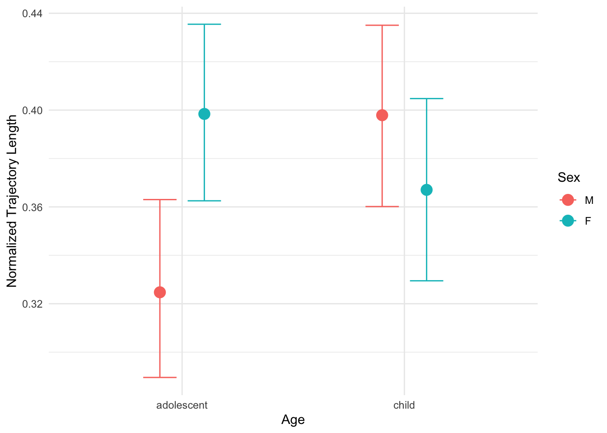

ICPhS: regression analyses
Rosie Oxbury
10/08/2019
Below is the code (a) for the statistical analysis Oxbury & McCarthy did for their ICPhS 2019 poster, and (b) for the violin plots that appeared at the bottom of the poster.

Cleaning
First, load necessary packages:
library(tidyverse)
library(brms)## Loading required package: Rcpp## Registered S3 method overwritten by 'xts':
## method from
## as.zoo.xts zoo## Loading 'brms' package (version 2.9.0). Useful instructions
## can be found by typing help('brms'). A more detailed introduction
## to the package is available through vignette('brms_overview').library(sjstats)
library(bayesplot)## This is bayesplot version 1.7.0## - Online documentation and vignettes at mc-stan.org/bayesplot## - bayesplot theme set to bayesplot::theme_default()## * Does _not_ affect other ggplot2 plots## * See ?bayesplot_theme_set for details on theme settingLoad in the data:
diphs <- read_csv("icphs_data.csv")## Parsed with column specification:
## cols(
## .default = col_double(),
## participant = col_character(),
## sound_label = col_character(),
## word = col_character(),
## task = col_character(),
## age = col_character(),
## gender = col_character(),
## rol.var = col_character(),
## face.l = col_character(),
## price.l = col_character()
## )## See spec(...) for full column specifications.Alter duration so that (a) there are no tokens with duration longer than 0.75 seconds, and (b) it is log-transformed.
ggplot(diphs, aes(x = duration, fill = age)) + geom_histogram(bins = 100)Filter so that duration has to be less than 0.75, then see what it looks like.
diphs2 <- diphs %>% filter(duration < 0.75)See what it looks like log-transformed:
ggplot(diphs2, aes(x = log10(duration), fill = age)) + geom_histogram(bins = 100)
diphs3 <- mutate(diphs2,
LogDur = log10(duration))… and standardize it
diphs3 <- mutate(diphs3,
Log_dur_z = scale(LogDur))Check that all the other variables are OK. Convert some of them to factors
str(diphs3)## Classes 'spec_tbl_df', 'tbl_df', 'tbl' and 'data.frame': 8548 obs. of 60 variables:
## $ participant : chr "Amanda" "Amanda" "Amanda" "Amanda" ...
## $ sound_label : chr "face" "goat" "price" "price" ...
## $ sound_start : num 7.26 44.6 47.14 91.27 95.22 ...
## $ sound_end : num 7.6 44.7 47.2 91.3 95.3 ...
## $ word : chr "HEY" "GO" "FIND" "INSIDE" ...
## $ F1_20 : num 840 502 847 657 598 ...
## $ F1_35 : num 717 533 878 759 637 ...
## $ F1_50 : num 633 590 863 799 602 ...
## $ F1_65 : num 642 527 834 802 580 ...
## $ F1_80 : num 604 470 808 724 573 ...
## $ F2_20 : num 1875 1744 1528 1507 1163 ...
## $ F2_35 : num 1904 1831 1642 1475 1076 ...
## $ F2_50 : num 2129 1867 1692 1415 1144 ...
## $ F2_65 : num 2094 1888 1790 1456 948 ...
## $ F2_80 : num 2119 1842 1868 1501 1239 ...
## $ task : chr "soc.int" "soc.int" "soc.int" "soc.int" ...
## $ age : chr "adolescent" "adolescent" "adolescent" "adolescent" ...
## $ gender : chr "F" "F" "F" "F" ...
## $ meanF1 : num 687 524 846 748 598 ...
## $ meanF2 : num 2024 1834 1704 1471 1114 ...
## $ meanFleeceF1: num 460 460 460 460 460 ...
## $ meanFleeceF2: num 2648 2648 2648 2648 2648 ...
## $ meanTRAPF1 : num 853 853 853 853 853 ...
## $ u_F1 : num 460 460 460 460 460 ...
## $ u_F2 : num 460 460 460 460 460 ...
## $ trapF2 : num 1554 1554 1554 1554 1554 ...
## $ S_F1 : num 591 591 591 591 591 ...
## $ S_F2 : num 1554 1554 1554 1554 1554 ...
## $ normF1_20 : num 1.421 0.849 1.433 1.112 1.011 ...
## $ normF1_35 : num 1.213 0.901 1.485 1.285 1.078 ...
## $ normF1_50 : num 1.072 0.998 1.461 1.351 1.019 ...
## $ normF1_65 : num 1.087 0.892 1.411 1.357 0.982 ...
## $ normF1_80 : num 1.022 0.796 1.368 1.225 0.969 ...
## $ normF2_20 : num 1.207 1.122 0.984 0.97 0.748 ...
## $ normF2_35 : num 1.225 1.178 1.057 0.949 0.692 ...
## $ normF2_50 : num 1.37 1.201 1.089 0.911 0.736 ...
## $ normF2_65 : num 1.348 1.215 1.152 0.937 0.61 ...
## $ normF2_80 : num 1.363 1.186 1.202 0.966 0.797 ...
## $ duration : num 0.3321 0.0872 0.0859 0.0715 0.0792 ...
## $ changeF1 : num -236 -31.2 -38.6 67.3 -25 ...
## $ normChangeF1: num -0.3994 -0.0528 -0.0654 0.1139 -0.0423 ...
## $ changeF2 : num 243.41 98.4 339.78 -5.69 75.84 ...
## $ normChangeF2: num 0.15664 0.06332 0.21865 -0.00366 0.0488 ...
## $ VL : num 339 103.2 342 67.6 79.9 ...
## $ normVL : num 0.429 0.0825 0.2282 0.114 0.0646 ...
## $ normVSL1 : num 0.2087 0.0766 0.0896 0.1745 0.0869 ...
## $ normVSL2 : num 0.2024 0.0996 0.04 0.0767 0.073 ...
## $ normVSL3 : num 0.0269 0.1069 0.0808 0.0265 0.1323 ...
## $ normVSL4 : num 0.067 0.1006 0.0661 0.1347 0.1877 ...
## $ VSL1 : num 126.2 92.2 117.7 107.3 95.2 ...
## $ VSL2 : num 239.5 67.6 51.7 71.6 76.5 ...
## $ VSL3 : num 35.4 66.3 102.7 40.4 198.2 ...
## $ VSL4 : num 45.5 73.1 82 90.2 291.1 ...
## $ TrajLength : num 447 299 354 310 661 ...
## $ norm_TL : num 0.505 0.384 0.276 0.413 0.48 ...
## $ rol.var : chr "n.a." "no.rolling" "n.a." "n.a." ...
## $ face.l : chr "fine" "n.a." "n.a." "n.a." ...
## $ price.l : chr "n.a." "n.a." "fine" "fine" ...
## $ LogDur : num -0.479 -1.059 -1.066 -1.146 -1.101 ...
## $ Log_dur_z : num [1:8548, 1] 2.185 -0.685 -0.718 -1.112 -0.893 ...
## ..- attr(*, "scaled:center")= num -0.921
## ..- attr(*, "scaled:scale")= num 0.202Age as factor and sex as factor
diphs3$age <- as.factor(diphs3$age)
diphs3$gender <- as.factor(diphs3$gender)Participant and word as factors too
diphs3$participant <- as.factor(diphs3$participant)
diphs3$word <- as.factor(diphs3$word)Change the gender variable to sex
diphs3 <- diphs3 %>% rename(Sex = gender)Finally, we are going to recode that variable so that male becomes the reference level in the models we build.
diphs3$Sex <- relevel(diphs3$Sex, ref = "M")Now onto some modelling.
FACE
Make the subset:
face <- diphs3 %>% filter(sound_label == "face")FACE F1
N.B. in the real analysis, I checked the distribution of the dependent and independent variables, looked for outliers and so on… I am not putting all of that here because it would make the page pretty long :)
OK, now we should probably set some priors.
Check distribution of each of these to know what is a normal range:
ggplot(face, aes(x=Log_dur_z)) + geom_histogram(bins = 100)
ggplot(face, aes(x=age, y = normF1_20, fill = Sex)) + geom_violin()
Find out what priors we need:
get_prior(normF1_20 ~ Log_dur_z + age*Sex + (1|participant) + (1|word), data = face)## prior class coef group resp dpar nlpar
## 1 b
## 2 b agechild
## 3 b agechild:SexF
## 4 b Log_dur_z
## 5 b SexF
## 6 student_t(3, 1, 10) Intercept
## 7 student_t(3, 0, 10) sd
## 8 sd participant
## 9 sd Intercept participant
## 10 sd word
## 11 sd Intercept word
## 12 student_t(3, 0, 10) sigma
## bound
## 1
## 2
## 3
## 4
## 5
## 6
## 7
## 8
## 9
## 10
## 11
## 12Create the priors:
priors.1 <- c(set_prior("normal(1, 0.75)", class = "Intercept"),
set_prior("normal(0, 0.1)", class = "b", coef = "Log_dur_z"),
set_prior("normal(0, 0.75)", class = "b", coef = "agechild"),
set_prior("normal(0, 0.75)", class = "b", coef = "SexF"),
set_prior("normal(0, 1)", class = "b", coef = "agechild:SexF"), #2*age effect to allow for complete reversal
set_prior("normal(0, 0.75)", class = "sd", coef = "Intercept", group="participant"),
set_prior("normal(0, 0.75)", class = "sd", coef = "Intercept", group="word")
)And make the model:
model1.1 <- brm(normF1_20 ~ Log_dur_z + age*Sex + (1|participant) + (1|word), data = face, prior = priors.1)## Compiling the C++ model## Start sampling##
## SAMPLING FOR MODEL 'a0e0ae155a974d155793524f8a298c1a' NOW (CHAIN 1).
## Chain 1:
## Chain 1: Gradient evaluation took 0.000921 seconds
## Chain 1: 1000 transitions using 10 leapfrog steps per transition would take 9.21 seconds.
## Chain 1: Adjust your expectations accordingly!
## Chain 1:
## Chain 1:
## Chain 1: Iteration: 1 / 2000 [ 0%] (Warmup)
## Chain 1: Iteration: 200 / 2000 [ 10%] (Warmup)
## Chain 1: Iteration: 400 / 2000 [ 20%] (Warmup)
## Chain 1: Iteration: 600 / 2000 [ 30%] (Warmup)
## Chain 1: Iteration: 800 / 2000 [ 40%] (Warmup)
## Chain 1: Iteration: 1000 / 2000 [ 50%] (Warmup)
## Chain 1: Iteration: 1001 / 2000 [ 50%] (Sampling)
## Chain 1: Iteration: 1200 / 2000 [ 60%] (Sampling)
## Chain 1: Iteration: 1400 / 2000 [ 70%] (Sampling)
## Chain 1: Iteration: 1600 / 2000 [ 80%] (Sampling)
## Chain 1: Iteration: 1800 / 2000 [ 90%] (Sampling)
## Chain 1: Iteration: 2000 / 2000 [100%] (Sampling)
## Chain 1:
## Chain 1: Elapsed Time: 29.1547 seconds (Warm-up)
## Chain 1: 10.9636 seconds (Sampling)
## Chain 1: 40.1184 seconds (Total)
## Chain 1:
##
## SAMPLING FOR MODEL 'a0e0ae155a974d155793524f8a298c1a' NOW (CHAIN 2).
## Chain 2:
## Chain 2: Gradient evaluation took 0.000449 seconds
## Chain 2: 1000 transitions using 10 leapfrog steps per transition would take 4.49 seconds.
## Chain 2: Adjust your expectations accordingly!
## Chain 2:
## Chain 2:
## Chain 2: Iteration: 1 / 2000 [ 0%] (Warmup)
## Chain 2: Iteration: 200 / 2000 [ 10%] (Warmup)
## Chain 2: Iteration: 400 / 2000 [ 20%] (Warmup)
## Chain 2: Iteration: 600 / 2000 [ 30%] (Warmup)
## Chain 2: Iteration: 800 / 2000 [ 40%] (Warmup)
## Chain 2: Iteration: 1000 / 2000 [ 50%] (Warmup)
## Chain 2: Iteration: 1001 / 2000 [ 50%] (Sampling)
## Chain 2: Iteration: 1200 / 2000 [ 60%] (Sampling)
## Chain 2: Iteration: 1400 / 2000 [ 70%] (Sampling)
## Chain 2: Iteration: 1600 / 2000 [ 80%] (Sampling)
## Chain 2: Iteration: 1800 / 2000 [ 90%] (Sampling)
## Chain 2: Iteration: 2000 / 2000 [100%] (Sampling)
## Chain 2:
## Chain 2: Elapsed Time: 42.3746 seconds (Warm-up)
## Chain 2: 22.0958 seconds (Sampling)
## Chain 2: 64.4705 seconds (Total)
## Chain 2:
##
## SAMPLING FOR MODEL 'a0e0ae155a974d155793524f8a298c1a' NOW (CHAIN 3).
## Chain 3:
## Chain 3: Gradient evaluation took 0.000338 seconds
## Chain 3: 1000 transitions using 10 leapfrog steps per transition would take 3.38 seconds.
## Chain 3: Adjust your expectations accordingly!
## Chain 3:
## Chain 3:
## Chain 3: Iteration: 1 / 2000 [ 0%] (Warmup)
## Chain 3: Iteration: 200 / 2000 [ 10%] (Warmup)
## Chain 3: Iteration: 400 / 2000 [ 20%] (Warmup)
## Chain 3: Iteration: 600 / 2000 [ 30%] (Warmup)
## Chain 3: Iteration: 800 / 2000 [ 40%] (Warmup)
## Chain 3: Iteration: 1000 / 2000 [ 50%] (Warmup)
## Chain 3: Iteration: 1001 / 2000 [ 50%] (Sampling)
## Chain 3: Iteration: 1200 / 2000 [ 60%] (Sampling)
## Chain 3: Iteration: 1400 / 2000 [ 70%] (Sampling)
## Chain 3: Iteration: 1600 / 2000 [ 80%] (Sampling)
## Chain 3: Iteration: 1800 / 2000 [ 90%] (Sampling)
## Chain 3: Iteration: 2000 / 2000 [100%] (Sampling)
## Chain 3:
## Chain 3: Elapsed Time: 44.5869 seconds (Warm-up)
## Chain 3: 10.0145 seconds (Sampling)
## Chain 3: 54.6014 seconds (Total)
## Chain 3:
##
## SAMPLING FOR MODEL 'a0e0ae155a974d155793524f8a298c1a' NOW (CHAIN 4).
## Chain 4:
## Chain 4: Gradient evaluation took 0.000225 seconds
## Chain 4: 1000 transitions using 10 leapfrog steps per transition would take 2.25 seconds.
## Chain 4: Adjust your expectations accordingly!
## Chain 4:
## Chain 4:
## Chain 4: Iteration: 1 / 2000 [ 0%] (Warmup)
## Chain 4: Iteration: 200 / 2000 [ 10%] (Warmup)
## Chain 4: Iteration: 400 / 2000 [ 20%] (Warmup)
## Chain 4: Iteration: 600 / 2000 [ 30%] (Warmup)
## Chain 4: Iteration: 800 / 2000 [ 40%] (Warmup)
## Chain 4: Iteration: 1000 / 2000 [ 50%] (Warmup)
## Chain 4: Iteration: 1001 / 2000 [ 50%] (Sampling)
## Chain 4: Iteration: 1200 / 2000 [ 60%] (Sampling)
## Chain 4: Iteration: 1400 / 2000 [ 70%] (Sampling)
## Chain 4: Iteration: 1600 / 2000 [ 80%] (Sampling)
## Chain 4: Iteration: 1800 / 2000 [ 90%] (Sampling)
## Chain 4: Iteration: 2000 / 2000 [100%] (Sampling)
## Chain 4:
## Chain 4: Elapsed Time: 41.9364 seconds (Warm-up)
## Chain 4: 16.1023 seconds (Sampling)
## Chain 4: 58.0387 seconds (Total)
## Chain 4:Have a look at the model summary:
summary(model1.1)## Family: gaussian
## Links: mu = identity; sigma = identity
## Formula: normF1_20 ~ Log_dur_z + age * Sex + (1 | participant) + (1 | word)
## Data: face (Number of observations: 1935)
## Samples: 4 chains, each with iter = 2000; warmup = 1000; thin = 1;
## total post-warmup samples = 4000
##
## Group-Level Effects:
## ~participant (Number of levels: 28)
## Estimate Est.Error l-95% CI u-95% CI Eff.Sample Rhat
## sd(Intercept) 0.06 0.01 0.05 0.08 1023 1.01
##
## ~word (Number of levels: 246)
## Estimate Est.Error l-95% CI u-95% CI Eff.Sample Rhat
## sd(Intercept) 0.04 0.00 0.03 0.05 1340 1.00
##
## Population-Level Effects:
## Estimate Est.Error l-95% CI u-95% CI Eff.Sample Rhat
## Intercept 1.02 0.02 0.97 1.07 735 1.00
## Log_dur_z 0.04 0.00 0.03 0.04 6096 1.00
## agechild -0.06 0.03 -0.12 0.01 863 1.00
## SexF -0.00 0.03 -0.07 0.07 647 1.01
## agechild:SexF -0.01 0.05 -0.10 0.08 761 1.01
##
## Family Specific Parameters:
## Estimate Est.Error l-95% CI u-95% CI Eff.Sample Rhat
## sigma 0.12 0.00 0.11 0.12 4323 1.00
##
## Samples were drawn using sampling(NUTS). For each parameter, Eff.Sample
## is a crude measure of effective sample size, and Rhat is the potential
## scale reduction factor on split chains (at convergence, Rhat = 1).This summary indicates that:
A 1 Z-score increase in duration predicts a 0.04 increase in F1 at 20%. 95% of the posterior distribution is between 0.03 and 0.04 for this coefficient.
Although the coefficient for the age variable is larger in absolute terms than that for duration, the posterior distribution is flatter, and the 95% credible interval includes 0.
The posterior on the coefficient for Sex is centred at 0! So there really seems to be no effect of Sex. Similarly, the coefficient for the age-sex interaction is not very impressive.
A different kind of output:
tidy_stan(model1.1, prob=0.89, type="all", digits=4)## Warning in stddev/sqrt(ess): longer object length is not a multiple of
## shorter object length##
## # Summary Statistics of Stan-Model
##
## ## Fixed effects:
##
## estimate std.error HDI(89%) ratio rhat mcse
## Intercept 1.0184 0.0233 [ 0.9786 1.0546] 0.1837 1.0020 0.0009
## Log_dur_z 0.0382 0.0035 [ 0.0329 0.0438] 1.5240 0.9991 0.0000
## Log_dur_z 0.0382 0.0035 [ 0.0329 0.0438] 1.5240 0.9991 0.0000
## agechild -0.0566 0.0327 [-0.1131 -0.0063] 0.2156 1.0016 0.0012
## SexF -0.0010 0.0325 [-0.0544 0.0550] 0.1618 1.0084 0.0013
## agechild.SexF -0.0109 0.0461 [-0.0850 0.0614] 0.1904 1.0103 0.0017
##
## ## Random effect (Intercept: participant)
##
## estimate std.error HDI(89%) ratio rhat
## participant.Amanda 0.0381 0.0266 [-0.0047 0.0816] 0.1961 1.0081
## participant.CB -0.0231 0.0253 [-0.0619 0.0205] 0.2246 1.0013
## participant.Chantelle -0.0783 0.0254 [-0.1223 -0.0381] 0.1882 1.0104
## participant.ChrisB -0.0775 0.0256 [-0.1215 -0.0370] 0.1823 1.0105
## participant.F1 0.0430 0.0303 [-0.0045 0.0898] 0.3350 1.0015
## participant.F10 -0.0246 0.0254 [-0.0672 0.0162] 0.2711 1.0045
## participant.F3 -0.0750 0.0268 [-0.1178 -0.0342] 0.2825 1.0046
## participant.F4 0.0830 0.0296 [ 0.0391 0.1317] 0.3537 1.0037
## participant.F7 0.0590 0.0278 [ 0.0119 0.1032] 0.3083 1.0035
## participant.F8 -0.0995 0.0273 [-0.1406 -0.0536] 0.2917 1.0042
## participant.F9 0.0052 0.0260 [-0.0385 0.0460] 0.2948 1.0040
## participant.Ibrahim -0.0327 0.0253 [-0.0754 0.0066] 0.2210 1.0021
## participant.Jessica 0.0577 0.0266 [ 0.0134 0.0986] 0.2159 1.0081
## participant.Lola -0.0174 0.0254 [-0.0587 0.0248] 0.1820 1.0097
## participant.Lucy 0.0697 0.0273 [ 0.0244 0.1121] 0.2060 1.0096
## participant.M1 0.0581 0.0273 [ 0.0140 0.1029] 0.2780 1.0021
## participant.M3 -0.0245 0.0283 [-0.0714 0.0222] 0.3008 1.0014
## participant.M4 0.0725 0.0251 [ 0.0326 0.1160] 0.2464 1.0019
## participant.M5 -0.0361 0.0277 [-0.0776 0.0107] 0.2669 1.0014
## participant.M6 -0.0946 0.0267 [-0.1352 -0.0475] 0.2850 1.0015
## participant.M7 0.0117 0.0283 [-0.0373 0.0556] 0.3006 1.0013
## participant.M8 0.0135 0.0273 [-0.0301 0.0586] 0.3133 1.0013
## participant.Matisse 0.0201 0.0253 [-0.0203 0.0633] 0.2106 1.0023
## participant.Omar -0.0146 0.0269 [-0.0605 0.0260] 0.2287 1.0022
## participant.Sami 0.0416 0.0260 [-0.0011 0.0834] 0.2287 1.0014
## participant.Shantel 0.0024 0.0275 [-0.0399 0.0485] 0.2176 1.0079
## participant.Tariq 0.0305 0.0251 [-0.0116 0.0708] 0.2291 1.0019
## participant.ZR -0.0258 0.0270 [-0.0706 0.0167] 0.2451 1.0015
## mcse
## 9e-04
## 9e-04
## 1e-03
## 7e-04
## 9e-04
## 8e-04
## 7e-04
## 8e-04
## 8e-04
## 8e-04
## 9e-04
## 9e-04
## 1e-03
## 9e-04
## 8e-04
## 8e-04
## 9e-04
## 8e-04
## 8e-04
## 8e-04
## 8e-04
## 1e-03
## 9e-04
## 9e-04
## 9e-04
## 9e-04
## 8e-04
## 4e-04
##
## ## Random effect (Intercept: word...APRIL..)
##
## estimate std.error HDI(89%) ratio rhat mcse
## word...APRIL.. -0.0162 0.0398 [-0.0828 0.0451] 1.2643 0.9993 6e-04
##
## ## Random effect (Intercept: word...EIGHTEENTH..)
##
## estimate std.error HDI(89%) ratio rhat
## word...EIGHTEENTH.. -0.0023 0.0401 [-0.0673 0.0623] 1.229 0.9994
## mcse
## 6e-04
##
## ## Random effect (Intercept: word...FACE..)
##
## estimate std.error HDI(89%) ratio rhat mcse
## word...FACE.. -0.0401 0.0376 [-0.1051 0.0175] 1.3655 1.0002 6e-04
##
## ## Random effect (Intercept: word)
##
## estimate std.error HDI(89%) ratio rhat
## word.A 0.0074 0.0186 [-0.0241 0.0345] 1.1032 0.9998
## word.ABBREVIATIONS -0.0127 0.0391 [-0.0724 0.0508] 1.1925 1.0000
## word.ABLE -0.0119 0.0370 [-0.0712 0.0461] 1.1858 0.9993
## word.ACE 0.0002 0.0411 [-0.0655 0.0635] 1.5288 0.9997
## word.ACHE -0.0200 0.0400 [-0.0812 0.0502] 1.1550 1.0003
## word.ACQUAINTANCES -0.0073 0.0412 [-0.0678 0.0637] 1.3886 0.9994
## word.AEROPLANE 0.0001 0.0380 [-0.0592 0.0602] 1.5982 0.9995
## word.AGE -0.0786 0.0292 [-0.1253 -0.0353] 1.2889 0.9997
## word.ALWAYS -0.0288 0.0374 [-0.0870 0.0296] 1.2548 1.0003
## word.AMAZINGLY -0.0099 0.0393 [-0.0757 0.0543] 1.3801 1.0000
## word.ANYWAY -0.0039 0.0364 [-0.0601 0.0533] 1.4572 0.9994
## word.ANYWAYS -0.0200 0.0398 [-0.0837 0.0468] 1.1392 0.9996
## word.APRIL 0.0051 0.0320 [-0.0472 0.0535] 1.3398 0.9997
## word.ASIAN -0.0012 0.0384 [-0.0619 0.0599] 1.1786 0.9997
## word.ATE 0.0029 0.0376 [-0.0559 0.0634] 1.4305 1.0003
## word.AWAY 0.0087 0.0222 [-0.0261 0.0458] 1.4229 0.9999
## word.BABIES -0.0014 0.0406 [-0.0638 0.0645] 1.5282 1.0002
## word.BABY -0.0431 0.0158 [-0.0704 -0.0200] 1.1234 1.0000
## word.BAIT 0.0022 0.0379 [-0.0571 0.0637] 1.1244 1.0004
## word.BASED 0.0095 0.0389 [-0.0508 0.0703] 1.0187 1.0004
## word.BASICALLY -0.0190 0.0174 [-0.0458 0.0115] 1.1061 0.9997
## word.BECAME -0.0067 0.0368 [-0.0648 0.0552] 1.4202 0.9998
## word.BEHAVIOR 0.0032 0.0392 [-0.0555 0.0710] 1.5875 1.0001
## word.BEHAVIOUR -0.0201 0.0388 [-0.0791 0.0449] 1.2091 0.9995
## word.BIRTHDAY -0.0292 0.0298 [-0.0753 0.0198] 1.2427 1.0000
## word.BLAME 0.0043 0.0382 [-0.0561 0.0722] 1.6895 0.9993
## word.BRAVE 0.0174 0.0398 [-0.0462 0.0833] 1.1230 1.0000
## word.BREAK 0.0126 0.0359 [-0.0471 0.0667] 1.3411 0.9997
## word.BREAKING -0.0071 0.0405 [-0.0731 0.0570] 1.5591 0.9998
## word.CAKE 0.0760 0.0168 [ 0.0494 0.1020] 1.1847 0.9995
## word.CAME -0.0239 0.0172 [-0.0505 0.0035] 1.3115 0.9997
## word.CAPABLE -0.0018 0.0383 [-0.0677 0.0564] 1.2584 0.9997
## word.CASE -0.0147 0.0364 [-0.0736 0.0474] 1.3574 0.9999
## word.CELEBRATE 0.0024 0.0394 [-0.0641 0.0645] 1.2150 1.0003
## word.CELEBRATING 0.0113 0.0413 [-0.0536 0.0769] 1.5718 0.9999
## word.CHANGE 0.0043 0.0247 [-0.0333 0.0441] 1.2433 0.9996
## word.CHANGED 0.0008 0.0375 [-0.0579 0.0608] 1.3273 0.9993
## word.CHANGES 0.0007 0.0395 [-0.0612 0.0682] 1.3239 0.9995
## word.CHASE -0.0026 0.0378 [-0.0620 0.0592] 1.4858 0.9994
## word.CHASED -0.0131 0.0393 [-0.0752 0.0478] 1.2873 0.9999
## word.CHASING -0.0041 0.0390 [-0.0702 0.0572] 1.4297 0.9997
## word.CLAIM -0.0027 0.0399 [-0.0646 0.0593] 1.2145 1.0004
## word.CLAIMED 0.0366 0.0378 [-0.0265 0.0962] 1.4205 0.9994
## word.CLAIMING 0.0177 0.0403 [-0.0454 0.0839] 1.4239 0.9995
## word.COMMUNICATE 0.0014 0.0401 [-0.0603 0.0663] 1.4551 0.9991
## word.COMMUNICATION -0.0064 0.0395 [-0.0661 0.0613] 1.5369 0.9997
## word.CONVERSATION -0.0258 0.0372 [-0.0893 0.0289] 1.3597 0.9997
## word.CONVERSATIONS -0.0149 0.0403 [-0.0809 0.0489] 1.3080 0.9999
## word.CRAZY 0.0694 0.0273 [ 0.0239 0.1133] 1.2697 0.9996
## word.CREATE 0.0144 0.0406 [-0.0455 0.0811] 1.1644 0.9997
## word.CREATED -0.0198 0.0409 [-0.0823 0.0501] 1.2157 1.0003
## word.CREATING -0.0080 0.0394 [-0.0688 0.0551] 1.3895 0.9996
## word.CUPCAKE -0.0276 0.0368 [-0.0897 0.0289] 1.2847 0.9995
## word.DAISY -0.0307 0.0347 [-0.0843 0.0243] 1.1566 0.9997
## word.DATE -0.0090 0.0348 [-0.0692 0.0416] 1.1974 0.9991
## word.DATES 0.0014 0.0352 [-0.0535 0.0595] 1.2867 1.0000
## word.DAY -0.0096 0.0201 [-0.0409 0.0225] 1.2299 1.0009
## word.DAYLIGHT 0.0184 0.0373 [-0.0435 0.0785] 1.2354 0.9994
## word.DAYS -0.0635 0.0208 [-0.0998 -0.0322] 1.1899 1.0001
## word.DISABLED -0.0122 0.0385 [-0.0750 0.0493] 1.4298 1.0000
## word.DONATED -0.0006 0.0397 [-0.0594 0.0680] 1.3487 0.9994
## word.EIGHT 0.0697 0.0192 [ 0.0404 0.1002] 1.1448 1.0002
## word.EIGHTH -0.0285 0.0389 [-0.0864 0.0375] 1.1380 0.9996
## word.EIGHTY -0.0097 0.0370 [-0.0792 0.0474] 1.2340 1.0004
## word.ELABORATE 0.0027 0.0379 [-0.0597 0.0636] 1.1710 1.0002
## word.ELABORATED -0.0048 0.0395 [-0.0663 0.0610] 1.5195 0.9994
## word.ESCALATES -0.0199 0.0370 [-0.0781 0.0409] 1.3490 1.0000
## word.ESCAPED -0.0729 0.0282 [-0.1137 -0.0278] 1.1152 0.9997
## word.ESTATE -0.0081 0.0379 [-0.0682 0.0545] 1.1041 1.0000
## word.EXPLAIN 0.0034 0.0368 [-0.0557 0.0612] 1.2510 0.9995
## word.FACE 0.0040 0.0239 [-0.0359 0.0408] 1.2361 0.9991
## word.FACED -0.0036 0.0405 [-0.0680 0.0608] 1.2572 0.9995
## word.FACES -0.0032 0.0404 [-0.0643 0.0633] 1.1601 1.0000
## word.FAKE 0.0164 0.0343 [-0.0385 0.0701] 1.1937 1.0003
## word.FAMOUS 0.0158 0.0412 [-0.0492 0.0789] 1.2823 0.9999
## word.FAVORITE -0.0061 0.0384 [-0.0663 0.0564] 1.3591 0.9993
## word.FAVOURITE 0.0018 0.0378 [-0.0609 0.0605] 1.1886 1.0000
## word.FLAMES -0.0134 0.0382 [-0.0747 0.0456] 1.0840 0.9995
## word.FLIRTATIOUS 0.0054 0.0411 [-0.0635 0.0674] 1.1758 0.9993
## word.FRIDAY -0.0134 0.0406 [-0.0789 0.0488] 1.3170 0.9993
## word.GAME -0.0348 0.0279 [-0.0775 0.0082] 1.3961 0.9995
## word.GAMES -0.0186 0.0377 [-0.0745 0.0472] 1.1814 0.9995
## word.GATE 0.0025 0.0199 [-0.0309 0.0332] 1.1810 1.0002
## word.GAVE -0.0793 0.0228 [-0.1147 -0.0411] 1.0883 0.9993
## word.GAY -0.0151 0.0268 [-0.0599 0.0259] 1.2246 1.0000
## word.GAYS -0.0049 0.0393 [-0.0734 0.0581] 1.2673 1.0002
## word.GENERATION 0.0100 0.0362 [-0.0486 0.0689] 1.3793 0.9995
## word.GREAT 0.0278 0.0304 [-0.0198 0.0796] 1.2800 1.0003
## word.GRENADA 0.0345 0.0389 [-0.0219 0.0993] 0.9970 0.9998
## word.GREY 0.0328 0.0259 [-0.0084 0.0744] 1.3232 1.0003
## word.H -0.0174 0.0367 [-0.0795 0.0407] 1.4534 0.9998
## word.HAIRSPRAY 0.0152 0.0404 [-0.0496 0.0798] 1.5425 0.9994
## word.HATE -0.0308 0.0349 [-0.0866 0.0221] 1.2933 0.9995
## word.HATED -0.0318 0.0320 [-0.0856 0.0143] 1.2161 1.0003
## word.HAY 0.1095 0.0223 [ 0.0751 0.1473] 0.7988 1.0010
## word.HAYS 0.0002 0.0391 [-0.0619 0.0647] 1.2271 0.9996
## word.HEY 0.0549 0.0351 [ 0.0002 0.1141] 1.1243 1.0002
## word.HEYA 0.0385 0.0409 [-0.0301 0.0997] 1.1020 1.0000
## word.HOLIDAY 0.0165 0.0390 [-0.0458 0.0763] 1.3618 0.9999
## word.HOLIDAYS -0.0051 0.0367 [-0.0605 0.0542] 1.3530 1.0007
## word.INDICATE 0.0033 0.0389 [-0.0567 0.0705] 1.5244 0.9996
## word.INTEGRATED -0.0098 0.0402 [-0.0736 0.0556] 1.3448 1.0005
## word.INVADING -0.0033 0.0395 [-0.0657 0.0602] 1.1892 0.9992
## word.ISOLATION -0.0159 0.0409 [-0.0811 0.0507] 1.2053 0.9995
## word.ISRAELI -0.0004 0.0400 [-0.0613 0.0664] 1.2854 0.9996
## word.J -0.0167 0.0338 [-0.0736 0.0329] 1.2129 1.0002
## word.JAMAICAN 0.0171 0.0382 [-0.0426 0.0772] 1.2635 0.9998
## word.K -0.0115 0.0365 [-0.0693 0.0487] 1.2283 0.9996
## word.KAY -0.0087 0.0275 [-0.0567 0.0316] 1.5285 0.9995
## word.LADIES 0.0093 0.0397 [-0.0541 0.0756] 1.2885 0.9999
## word.LADY 0.0082 0.0250 [-0.0310 0.0480] 1.3764 0.9998
## word.LATE 0.0470 0.0329 [-0.0071 0.1001] 1.0923 0.9998
## word.LATER 0.0060 0.0239 [-0.0327 0.0459] 1.1327 1.0009
## word.LAYING 0.0025 0.0385 [-0.0558 0.0715] 1.4341 0.9992
## word.MADE 0.0072 0.0239 [-0.0321 0.0477] 1.4717 1.0000
## word.MAIN 0.0060 0.0402 [-0.0582 0.0681] 1.4712 0.9995
## word.MAINLY 0.0195 0.0334 [-0.0366 0.0685] 1.2993 0.9993
## word.MAINSTREAM -0.0001 0.0383 [-0.0609 0.0679] 1.4185 1.0004
## word.MAISONETTE 0.0104 0.0410 [-0.0568 0.0723] 1.2751 0.9997
## word.MAJOR -0.0127 0.0386 [-0.0746 0.0468] 1.3538 0.9998
## word.MAJORLY -0.0160 0.0387 [-0.0772 0.0461] 1.1572 0.9999
## word.MAKE 0.0151 0.0209 [-0.0183 0.0481] 1.1069 0.9994
## word.MAKES -0.0181 0.0321 [-0.0706 0.0322] 1.1744 0.9993
## word.MAKING 0.0242 0.0301 [-0.0212 0.0725] 1.4450 1.0008
## word.MATES 0.0040 0.0394 [-0.0656 0.0653] 1.5866 0.9996
## word.MAY 0.0063 0.0406 [-0.0570 0.0720] 1.3501 0.9996
## word.MAYBE -0.0032 0.0250 [-0.0433 0.0366] 1.1575 1.0009
## word.MEDICATION -0.0153 0.0401 [-0.0836 0.0482] 1.3109 1.0010
## word.MISTAKE -0.0298 0.0385 [-0.0889 0.0304] 1.2038 0.9992
## word.MISTAKES -0.0229 0.0352 [-0.0841 0.0337] 1.3819 0.9995
## word.MKAY 0.0113 0.0364 [-0.0427 0.0716] 1.2535 0.9997
## word.MONDAY 0.0152 0.0340 [-0.0408 0.0706] 1.4259 0.9999
## word.NAKED 0.0131 0.0393 [-0.0521 0.0746] 1.0244 1.0015
## word.NAME 0.0138 0.0243 [-0.0279 0.0499] 1.3064 0.9999
## word.NAMES 0.0318 0.0370 [-0.0287 0.0878] 1.1603 1.0000
## word.NAVY -0.0336 0.0350 [-0.0901 0.0209] 1.2475 1.0003
## word.NEIGHBORING -0.0027 0.0399 [-0.0708 0.0573] 1.1582 0.9997
## word.NEIGHBOUR -0.0248 0.0376 [-0.0851 0.0359] 1.2542 0.9996
## word.NEIGHBOURS 0.0019 0.0371 [-0.0639 0.0574] 1.8444 0.9998
## word.NICKNAME 0.0092 0.0411 [-0.0572 0.0716] 1.2796 0.9996
## word.NOWADAYS -0.0300 0.0350 [-0.0816 0.0288] 1.5037 0.9995
## word.OCCASIONS -0.0034 0.0380 [-0.0673 0.0582] 1.1982 0.9997
## word.OKAY -0.0113 0.0116 [-0.0297 0.0078] 0.7945 0.9992
## word.ORIGINATORS 0.0247 0.0398 [-0.0479 0.0828] 1.2299 0.9997
## word.OVERRATED -0.0050 0.0382 [-0.0701 0.0582] 1.4906 0.9993
## word.PAGE 0.0378 0.0396 [-0.0180 0.1055] 1.1093 1.0001
## word.PAGES -0.0053 0.0408 [-0.0654 0.0687] 1.5234 0.9997
## word.PAID 0.0172 0.0393 [-0.0501 0.0796] 1.3346 0.9994
## word.PAINT 0.0228 0.0354 [-0.0341 0.0827] 1.0977 1.0004
## word.PAINTED -0.0038 0.0397 [-0.0657 0.0625] 1.1778 0.9994
## word.PAINTING -0.0166 0.0377 [-0.0790 0.0414] 1.3120 0.9994
## word.PAPER 0.0155 0.0291 [-0.0291 0.0637] 1.1968 1.0003
## word.PAY -0.0129 0.0307 [-0.0629 0.0381] 1.3252 0.9995
## word.PAYING -0.0033 0.0364 [-0.0634 0.0571] 1.0164 1.0009
## word.PLACE 0.0305 0.0277 [-0.0132 0.0772] 1.2455 1.0002
## word.PLACES -0.0009 0.0407 [-0.0601 0.0688] 1.2735 0.9998
## word.PLATE 0.0077 0.0420 [-0.0577 0.0730] 1.1678 1.0000
## word.PLAY 0.0426 0.0249 [ 0.0055 0.0818] 1.1935 0.9991
## word.PLAYED 0.0486 0.0364 [-0.0092 0.1043] 1.0904 0.9999
## word.PLAYER -0.0010 0.0408 [-0.0702 0.0596] 1.2310 1.0000
## word.PLAYING 0.0316 0.0305 [-0.0188 0.0805] 1.2939 1.0001
## word.PLAYS -0.0040 0.0393 [-0.0642 0.0654] 1.3447 0.9995
## word.PLAYTIME -0.0091 0.0349 [-0.0682 0.0453] 1.5040 0.9998
## word.PORTRAY -0.0193 0.0390 [-0.0822 0.0417] 1.3883 0.9998
## word.PRAY 0.0104 0.0403 [-0.0505 0.0786] 1.2675 0.9996
## word.PRAYED 0.0098 0.0406 [-0.0542 0.0729] 1.3511 1.0004
## word.PRAYING 0.0050 0.0402 [-0.0596 0.0694] 1.2095 1.0001
## word.RACE 0.0071 0.0366 [-0.0490 0.0676] 1.3787 0.9997
## word.RACIAL 0.0011 0.0421 [-0.0696 0.0628] 1.3868 0.9996
## word.RACING 0.0271 0.0240 [-0.0123 0.0653] 1.2532 0.9995
## word.RACISM -0.0104 0.0416 [-0.0711 0.0580] 1.1169 0.9995
## word.RACIST -0.0039 0.0299 [-0.0525 0.0423] 1.3313 0.9992
## word.RAIN 0.0362 0.0403 [-0.0275 0.1010] 1.0545 1.0004
## word.RAINBOW -0.0168 0.0415 [-0.0846 0.0474] 1.4833 0.9995
## word.RAINY -0.0219 0.0389 [-0.0843 0.0380] 1.1264 0.9998
## word.RAISED -0.0170 0.0356 [-0.0751 0.0370] 1.3790 1.0000
## word.RAISING -0.0057 0.0250 [-0.0460 0.0326] 1.2351 0.9998
## word.RAPE 0.0059 0.0405 [-0.0555 0.0740] 1.4108 1.0000
## word.RELATED -0.0110 0.0393 [-0.0723 0.0574] 1.4067 0.9994
## word.RELATIONSHIP -0.0096 0.0330 [-0.0609 0.0453] 1.1361 0.9999
## word.RETALIATING 0.0002 0.0400 [-0.0681 0.0600] 1.3570 0.9991
## word.ROLLERBLADES 0.0109 0.0381 [-0.0496 0.0742] 1.3639 0.9998
## word.SAFE -0.0141 0.0327 [-0.0687 0.0341] 1.1693 0.9995
## word.SAFETY -0.0224 0.0278 [-0.0652 0.0203] 1.1193 0.9994
## word.SAINSBURYS -0.0015 0.0388 [-0.0659 0.0617] 1.2682 0.9999
## word.SAKE -0.0230 0.0387 [-0.0856 0.0345] 0.9618 0.9996
## word.SAME 0.0309 0.0129 [ 0.0105 0.0523] 1.1091 0.9996
## word.SAVE 0.0055 0.0361 [-0.0522 0.0647] 1.1853 0.9997
## word.SAVED -0.0131 0.0426 [-0.0822 0.0501] 1.2717 0.9996
## word.SAY 0.0076 0.0127 [-0.0134 0.0267] 0.9643 1.0006
## word.SAYING 0.0341 0.0155 [ 0.0078 0.0585] 1.0449 1.0008
## word.SEPARATED 0.0174 0.0406 [-0.0467 0.0850] 1.0232 1.0002
## word.SHAKING 0.0035 0.0422 [-0.0609 0.0697] 1.4778 0.9993
## word.SHAPE -0.0065 0.0379 [-0.0665 0.0567] 1.3129 0.9999
## word.SITUATION -0.0131 0.0365 [-0.0704 0.0493] 1.1176 0.9996
## word.SITUATIONS -0.0018 0.0404 [-0.0659 0.0635] 1.2304 0.9998
## word.SNAKE 0.0019 0.0410 [-0.0619 0.0687] 1.4133 0.9995
## word.SPACE -0.0120 0.0361 [-0.0709 0.0444] 1.4395 1.0002
## word.SPRAYING 0.0021 0.0386 [-0.0618 0.0677] 1.3293 0.9993
## word.STAGES -0.0172 0.0392 [-0.0796 0.0446] 1.3810 0.9992
## word.STATEMENT -0.0106 0.0424 [-0.0710 0.0579] 1.2480 0.9994
## word.STATION -0.0177 0.0395 [-0.0821 0.0487] 1.1157 0.9992
## word.STAY 0.0253 0.0241 [-0.0134 0.0639] 1.2623 0.9994
## word.STAYED -0.0289 0.0235 [-0.0645 0.0091] 1.1181 0.9997
## word.STAYING 0.0202 0.0355 [-0.0351 0.0786] 1.4273 0.9999
## word.STEAK 0.0154 0.0380 [-0.0417 0.0789] 1.2941 0.9994
## word.STRAIGHT 0.0413 0.0321 [-0.0084 0.0923] 1.0617 0.9999
## word.SUNDAYS -0.0234 0.0393 [-0.0859 0.0427] 1.2846 0.9998
## word.TABLE -0.0308 0.0201 [-0.0637 0.0002] 1.1869 0.9996
## word.TAKE 0.0308 0.0187 [ 0.0025 0.0604] 1.0721 0.9997
## word.TAKEAWAY 0.0058 0.0394 [-0.0557 0.0767] 1.2681 0.9999
## word.TAKEN -0.0062 0.0400 [-0.0705 0.0550] 1.4399 0.9996
## word.TAKES -0.0053 0.0380 [-0.0622 0.0660] 1.0732 0.9995
## word.TAKING 0.0242 0.0350 [-0.0313 0.0787] 1.2097 0.9999
## word.TEENAGERS 0.0108 0.0371 [-0.0488 0.0737] 1.2803 0.9994
## word.THEY -0.0194 0.0094 [-0.0343 -0.0041] 0.8234 1.0008
## word.TODAY -0.0037 0.0293 [-0.0513 0.0405] 1.3346 0.9995
## word.TRAINED 0.0103 0.0398 [-0.0537 0.0766] 1.2705 0.9992
## word.TRAINERS 0.0089 0.0405 [-0.0540 0.0736] 1.5318 0.9994
## word.TUESDAY 0.0003 0.0399 [-0.0617 0.0681] 1.4183 1.0003
## word.VIBRATING -0.0060 0.0382 [-0.0687 0.0562] 1.2602 0.9993
## word.WAIT 0.0450 0.0168 [ 0.0194 0.0730] 1.1397 1.0000
## word.WAITED 0.0321 0.0405 [-0.0336 0.0983] 1.1713 0.9996
## word.WAITING 0.0068 0.0343 [-0.0451 0.0637] 1.3561 0.9998
## word.WAKE 0.0126 0.0370 [-0.0466 0.0750] 1.3119 0.9996
## word.WAKES -0.0083 0.0402 [-0.0741 0.0535] 1.3592 1.0002
## word.WASTING -0.0057 0.0420 [-0.0697 0.0580] 1.4398 0.9997
## word.WAY 0.0413 0.0193 [ 0.0107 0.0739] 1.2788 1.0005
## word.WAYS 0.0142 0.0371 [-0.0486 0.0734] 1.2019 0.9999
## word.WEDNESDAY 0.0048 0.0397 [-0.0620 0.0671] 1.5227 0.9999
## word.YESTERDAY -0.0069 0.0396 [-0.0678 0.0596] 1.2117 0.9999
## mcse
## 0.0003
## 0.0006
## 0.0005
## 0.0006
## 0.0006
## 0.0005
## 0.0005
## 0.0004
## 0.0005
## 0.0005
## 0.0005
## 0.0006
## 0.0005
## 0.0005
## 0.0005
## 0.0003
## 0.0006
## 0.0002
## 0.0006
## 0.0006
## 0.0002
## 0.0005
## 0.0006
## 0.0005
## 0.0004
## 0.0006
## 0.0006
## 0.0005
## 0.0006
## 0.0002
## 0.0002
## 0.0005
## 0.0005
## 0.0005
## 0.0006
## 0.0003
## 0.0005
## 0.0005
## 0.0005
## 0.0005
## 0.0006
## 0.0005
## 0.0005
## 0.0005
## 0.0005
## 0.0005
## 0.0005
## 0.0006
## 0.0004
## 0.0006
## 0.0006
## 0.0005
## 0.0006
## 0.0005
## 0.0005
## 0.0005
## 0.0003
## 0.0006
## 0.0003
## 0.0005
## 0.0006
## 0.0003
## 0.0006
## 0.0006
## 0.0005
## 0.0005
## 0.0006
## 0.0004
## 0.0005
## 0.0005
## 0.0003
## 0.0006
## 0.0006
## 0.0005
## 0.0006
## 0.0006
## 0.0006
## 0.0006
## 0.0006
## 0.0005
## 0.0004
## 0.0005
## 0.0003
## 0.0003
## 0.0004
## 0.0006
## 0.0005
## 0.0005
## 0.0005
## 0.0003
## 0.0005
## 0.0006
## 0.0005
## 0.0006
## 0.0003
## 0.0006
## 0.0005
## 0.0006
## 0.0005
## 0.0005
## 0.0005
## 0.0006
## 0.0006
## 0.0006
## 0.0006
## 0.0005
## 0.0005
## 0.0005
## 0.0004
## 0.0005
## 0.0004
## 0.0005
## 0.0003
## 0.0006
## 0.0003
## 0.0006
## 0.0004
## 0.0006
## 0.0006
## 0.0006
## 0.0006
## 0.0003
## 0.0004
## 0.0004
## 0.0006
## 0.0006
## 0.0003
## 0.0006
## 0.0005
## 0.0005
## 0.0005
## 0.0005
## 0.0006
## 0.0003
## 0.0005
## 0.0005
## 0.0006
## 0.0004
## 0.0005
## 0.0005
## 0.0005
## 0.0007
## 0.0002
## 0.0005
## 0.0006
## 0.0005
## 0.0006
## 0.0006
## 0.0005
## 0.0006
## 0.0006
## 0.0004
## 0.0005
## 0.0005
## 0.0004
## 0.0006
## 0.0006
## 0.0004
## 0.0005
## 0.0006
## 0.0004
## 0.0005
## 0.0005
## 0.0005
## 0.0005
## 0.0006
## 0.0005
## 0.0005
## 0.0006
## 0.0004
## 0.0006
## 0.0005
## 0.0005
## 0.0006
## 0.0005
## 0.0005
## 0.0003
## 0.0005
## 0.0006
## 0.0005
## 0.0005
## 0.0006
## 0.0005
## 0.0004
## 0.0006
## 0.0006
## 0.0002
## 0.0005
## 0.0007
## 0.0002
## 0.0002
## 0.0005
## 0.0006
## 0.0006
## 0.0005
## 0.0005
## 0.0005
## 0.0005
## 0.0006
## 0.0006
## 0.0006
## 0.0006
## 0.0004
## 0.0003
## 0.0005
## 0.0006
## 0.0004
## 0.0006
## 0.0003
## 0.0003
## 0.0005
## 0.0006
## 0.0006
## 0.0005
## 0.0007
## 0.0001
## 0.0004
## 0.0005
## 0.0005
## 0.0006
## 0.0006
## 0.0002
## 0.0006
## 0.0005
## 0.0005
## 0.0005
## 0.0006
## 0.0003
## 0.0005
## 0.0006
## 0.0015
##
## ## Random effect (Intercept: word.AIN)
##
## estimate std.error HDI(89%) ratio rhat mcse
## word.AIN.T 0.0059 0.0407 [-0.0566 0.0722] 1.3735 0.9996 6e-04
##
## ## Random effect (Intercept: word.ASIAN)
##
## estimate std.error HDI(89%) ratio rhat mcse
## word.ASIAN.S -0.0104 0.0415 [-0.0757 0.0546] 1.3899 0.9999 5e-04
##
## ## Random effect (Intercept: word.BABY)
##
## estimate std.error HDI(89%) ratio rhat mcse
## word.BABY.S -0.0121 0.0372 [-0.0718 0.0489] 1.4298 0.9994 6e-04
##
## ## Random effect (Intercept: word.BIRTHDAY)
##
## estimate std.error HDI(89%) ratio rhat mcse
## word.BIRTHDAY.S -0.0222 0.0366 [-0.0787 0.0376] 1.1526 1.0002 4e-04
##
## ## Random effect (Intercept: word.GATE)
##
## estimate std.error HDI(89%) ratio rhat mcse
## word.GATE.S 0.0096 0.039 [-0.0506 0.0770] 1.1468 1.0006 6e-04
##
## ## Random effect (Intercept: word.INVESTIGATOR)
##
## estimate std.error HDI(89%) ratio rhat
## word.INVESTIGATOR.S -0.0101 0.0412 [-0.0752 0.0536] 1.2535 0.9996
## mcse
## 6e-04
##
## ## Random effect (Intercept: word.M)
##
## estimate std.error HDI(89%) ratio rhat mcse
## word.M.KAY -0.0219 0.0396 [-0.0815 0.0452] 1.2411 1.0005 5e-04
##
## ## Random effect (Intercept: word.NAME)
##
## estimate std.error HDI(89%) ratio rhat mcse
## word.NAME.S 0.0137 0.0405 [-0.0501 0.0786] 1.3822 0.9995 6e-04
##
## ## Random effect (Intercept: word.PAPER)
##
## estimate std.error HDI(89%) ratio rhat mcse
## word.PAPER.S 0.014 0.0374 [-0.0444 0.0761] 1.2394 0.9999 5e-04
##
## ## Random effect (Intercept: word.THEY)
##
## estimate std.error HDI(89%) ratio rhat mcse
## word.THEY.D -0.0155 0.0397 [-0.0854 0.0447] 1.208 0.9993 6e-04
## word.THEY.VE -0.0076 0.0356 [-0.0662 0.0507] 1.251 0.9996 5e-04
##
## ## Random effect (Intercept: word.TODAY)
##
## estimate std.error HDI(89%) ratio rhat mcse
## word.TODAY.S -0.0075 0.0401 [-0.0682 0.0637] 1.2017 0.9999 6e-04The authors of this other package recommend (a) using 89% credible interval, rather than 95%, for not-so-big data; and (b) looking at where the majority of the posterior distribution lies, not the 95%/89% that is symmetrical about the point estimate. See in the plots how the blue area is not necessarily symmetrical about the point estimate:
posterior1 <- as.matrix(model1.1)
#dimnames(posterior)
mcmc_areas(posterior1,
pars = c("b_Intercept",
"b_Log_dur_z",
"b_agechild",
"b_SexF",
"b_agechild:SexF"),
prob=0.89) This plot gives us an idea of how confident to be about the effects of different predictors. Not only are the coefficients for age, sex and their interaction close to zero, the posterior distributions over these parameters are pretty flat compared with e.g. the posterior distribution for duration.
This plot gives us an idea of how confident to be about the effects of different predictors. Not only are the coefficients for age, sex and their interaction close to zero, the posterior distributions over these parameters are pretty flat compared with e.g. the posterior distribution for duration.
This tidy_stan also gives us all the random intercepts, which is pretty nice, especially the ones for speakers.
Plotting Bayesian output
Plot marginal effects
marg1 <- marginal_effects(model1.1, ask = FALSE)
plot(marg1, plot = FALSE)[[2]]
Save the numbers needed for an interaction plot to a tibble:
faceF1 <- as.data.frame(marg1[4])Set up the colour palette and the position dodge that we’ll be using for all of these plots:
binary <- c("#E69F00", "#56B4E9")
pd <- position_dodge(0.9)o1 <- ggplot(data = face, aes(x = age, y = normF1_20, fill = Sex)) +
geom_violin(color = NA) +
geom_boxplot(width = 0.3, color = "#999999", position = pd) +
theme_minimal() +
scale_fill_manual(values = binary) +
theme(panel.grid.major = element_blank(),
panel.grid.minor = element_blank(),
legend.title = element_text(size = rel(2.5)),
legend.text = element_text(size = rel(2.5)),
axis.title = element_text(size = rel(3.5)),
axis.text = element_text(size = rel(3)),
plot.title = element_text(size = rel(3.5)),
plot.margin=unit(c(0.7,0.7,0.7,0.7),"cm")) +
labs(x = "Age", y = "Normalized F1 at 20%",
title = "FACE: normalized F1 at onset (20%)")
o1
str(faceF1)## 'data.frame': 4 obs. of 13 variables:
## $ age.Sex.age : Factor w/ 2 levels "adolescent","child": 1 1 2 2
## $ age.Sex.Sex : Factor w/ 2 levels "M","F": 1 2 1 2
## $ age.Sex.normF1_20 : num 0.986 0.986 0.986 0.986
## $ age.Sex.Log_dur_z : num -0.00818 -0.00818 -0.00818 -0.00818
## $ age.Sex.participant: logi NA NA NA NA
## $ age.Sex.word : logi NA NA NA NA
## $ age.Sex.cond__ : Factor w/ 1 level "1": 1 1 1 1
## $ age.Sex.effect1__ : Factor w/ 2 levels "adolescent","child": 1 1 2 2
## $ age.Sex.effect2__ : Factor w/ 2 levels "M","F": 1 2 1 2
## $ age.Sex.estimate__ : num 1.018 1.017 0.961 0.95
## $ age.Sex.se__ : num 0.0233 0.024 0.0247 0.0245
## $ age.Sex.lower__ : num 0.969 0.966 0.912 0.902
## $ age.Sex.upper__ : num 1.066 1.066 1.01 0.999Define columns to keep:
keep1 <- c("age.Sex.age", "age.Sex.Sex", "age.Sex.estimate__", "age.Sex.se__", "age.Sex.lower__", "age.Sex.upper__")Perform “select”:
faceF1_2 <- faceF1 %>% select(keep1)Rename columns:
colnames(faceF1_2) <- c("age","Sex","normF1_20", "SE","lower", "upper")Add error bars
o2 <- o1 + geom_point(data = faceF1_2, aes(x=age, y=normF1_20, group = Sex),
position = pd,
size = 4) +
geom_errorbar(data = faceF1_2,
aes(ymin=lower, ymax=upper),
width=.1,
size=1,
position = pd)
o2
FACE trajectory
As with FACE F1, note that I have done exploratory analysis of the distribution of the dependent variable in relation to its predictors, but I am not going to do all that here because it would take up lots of space…
Check distribution of TL in relation to duration (log10-transformed and Z-scored), age and sex:
ggplot(face, aes(x=Log_dur_z)) + geom_histogram(bins = 100)
ggplot(face, aes(x=age, y = norm_TL, fill = Sex)) + geom_violin()
Define the priors:
priors2 <- c(set_prior("normal(0.75, 0.75)", class = "Intercept"), # set a prior for the intercept
set_prior("normal(0, 2)", class = "b", coef = "Log_dur_z"),
set_prior("normal(0, 0.75)", class = "b", coef = "agechild"),
set_prior("normal(0, 0.75)", class = "b", coef = "SexF"),
set_prior("normal(0, 1.5)", class = "b", coef = "agechild:SexF"), #2*age effect to allow for complete reversal
set_prior("normal(0, 0.75)", class = "sd", coef = "Intercept", group="participant"),
set_prior("normal(0, 0.75)", class = "sd", coef = "Intercept", group="word")
)And build the model:
model2 <- brm(norm_TL ~ Log_dur_z + age*Sex + (1|participant) + (1|word), data = face, prior = priors2)## Compiling the C++ model## Start sampling##
## SAMPLING FOR MODEL '7b293a91127b74207a6959a0792c2ea1' NOW (CHAIN 1).
## Chain 1:
## Chain 1: Gradient evaluation took 0.001017 seconds
## Chain 1: 1000 transitions using 10 leapfrog steps per transition would take 10.17 seconds.
## Chain 1: Adjust your expectations accordingly!
## Chain 1:
## Chain 1:
## Chain 1: Iteration: 1 / 2000 [ 0%] (Warmup)
## Chain 1: Iteration: 200 / 2000 [ 10%] (Warmup)
## Chain 1: Iteration: 400 / 2000 [ 20%] (Warmup)
## Chain 1: Iteration: 600 / 2000 [ 30%] (Warmup)
## Chain 1: Iteration: 800 / 2000 [ 40%] (Warmup)
## Chain 1: Iteration: 1000 / 2000 [ 50%] (Warmup)
## Chain 1: Iteration: 1001 / 2000 [ 50%] (Sampling)
## Chain 1: Iteration: 1200 / 2000 [ 60%] (Sampling)
## Chain 1: Iteration: 1400 / 2000 [ 70%] (Sampling)
## Chain 1: Iteration: 1600 / 2000 [ 80%] (Sampling)
## Chain 1: Iteration: 1800 / 2000 [ 90%] (Sampling)
## Chain 1: Iteration: 2000 / 2000 [100%] (Sampling)
## Chain 1:
## Chain 1: Elapsed Time: 27.6853 seconds (Warm-up)
## Chain 1: 5.35323 seconds (Sampling)
## Chain 1: 33.0385 seconds (Total)
## Chain 1:
##
## SAMPLING FOR MODEL '7b293a91127b74207a6959a0792c2ea1' NOW (CHAIN 2).
## Chain 2:
## Chain 2: Gradient evaluation took 0.000166 seconds
## Chain 2: 1000 transitions using 10 leapfrog steps per transition would take 1.66 seconds.
## Chain 2: Adjust your expectations accordingly!
## Chain 2:
## Chain 2:
## Chain 2: Iteration: 1 / 2000 [ 0%] (Warmup)
## Chain 2: Iteration: 200 / 2000 [ 10%] (Warmup)
## Chain 2: Iteration: 400 / 2000 [ 20%] (Warmup)
## Chain 2: Iteration: 600 / 2000 [ 30%] (Warmup)
## Chain 2: Iteration: 800 / 2000 [ 40%] (Warmup)
## Chain 2: Iteration: 1000 / 2000 [ 50%] (Warmup)
## Chain 2: Iteration: 1001 / 2000 [ 50%] (Sampling)
## Chain 2: Iteration: 1200 / 2000 [ 60%] (Sampling)
## Chain 2: Iteration: 1400 / 2000 [ 70%] (Sampling)
## Chain 2: Iteration: 1600 / 2000 [ 80%] (Sampling)
## Chain 2: Iteration: 1800 / 2000 [ 90%] (Sampling)
## Chain 2: Iteration: 2000 / 2000 [100%] (Sampling)
## Chain 2:
## Chain 2: Elapsed Time: 29.1436 seconds (Warm-up)
## Chain 2: 12.3344 seconds (Sampling)
## Chain 2: 41.478 seconds (Total)
## Chain 2:
##
## SAMPLING FOR MODEL '7b293a91127b74207a6959a0792c2ea1' NOW (CHAIN 3).
## Chain 3:
## Chain 3: Gradient evaluation took 0.000174 seconds
## Chain 3: 1000 transitions using 10 leapfrog steps per transition would take 1.74 seconds.
## Chain 3: Adjust your expectations accordingly!
## Chain 3:
## Chain 3:
## Chain 3: Iteration: 1 / 2000 [ 0%] (Warmup)
## Chain 3: Iteration: 200 / 2000 [ 10%] (Warmup)
## Chain 3: Iteration: 400 / 2000 [ 20%] (Warmup)
## Chain 3: Iteration: 600 / 2000 [ 30%] (Warmup)
## Chain 3: Iteration: 800 / 2000 [ 40%] (Warmup)
## Chain 3: Iteration: 1000 / 2000 [ 50%] (Warmup)
## Chain 3: Iteration: 1001 / 2000 [ 50%] (Sampling)
## Chain 3: Iteration: 1200 / 2000 [ 60%] (Sampling)
## Chain 3: Iteration: 1400 / 2000 [ 70%] (Sampling)
## Chain 3: Iteration: 1600 / 2000 [ 80%] (Sampling)
## Chain 3: Iteration: 1800 / 2000 [ 90%] (Sampling)
## Chain 3: Iteration: 2000 / 2000 [100%] (Sampling)
## Chain 3:
## Chain 3: Elapsed Time: 26.4897 seconds (Warm-up)
## Chain 3: 11.414 seconds (Sampling)
## Chain 3: 37.9037 seconds (Total)
## Chain 3:
##
## SAMPLING FOR MODEL '7b293a91127b74207a6959a0792c2ea1' NOW (CHAIN 4).
## Chain 4:
## Chain 4: Gradient evaluation took 0.000433 seconds
## Chain 4: 1000 transitions using 10 leapfrog steps per transition would take 4.33 seconds.
## Chain 4: Adjust your expectations accordingly!
## Chain 4:
## Chain 4:
## Chain 4: Iteration: 1 / 2000 [ 0%] (Warmup)
## Chain 4: Iteration: 200 / 2000 [ 10%] (Warmup)
## Chain 4: Iteration: 400 / 2000 [ 20%] (Warmup)
## Chain 4: Iteration: 600 / 2000 [ 30%] (Warmup)
## Chain 4: Iteration: 800 / 2000 [ 40%] (Warmup)
## Chain 4: Iteration: 1000 / 2000 [ 50%] (Warmup)
## Chain 4: Iteration: 1001 / 2000 [ 50%] (Sampling)
## Chain 4: Iteration: 1200 / 2000 [ 60%] (Sampling)
## Chain 4: Iteration: 1400 / 2000 [ 70%] (Sampling)
## Chain 4: Iteration: 1600 / 2000 [ 80%] (Sampling)
## Chain 4: Iteration: 1800 / 2000 [ 90%] (Sampling)
## Chain 4: Iteration: 2000 / 2000 [100%] (Sampling)
## Chain 4:
## Chain 4: Elapsed Time: 27.9674 seconds (Warm-up)
## Chain 4: 17.9694 seconds (Sampling)
## Chain 4: 45.9368 seconds (Total)
## Chain 4:Check the model summary
summary(model2)## Family: gaussian
## Links: mu = identity; sigma = identity
## Formula: norm_TL ~ Log_dur_z + age * Sex + (1 | participant) + (1 | word)
## Data: face (Number of observations: 1935)
## Samples: 4 chains, each with iter = 2000; warmup = 1000; thin = 1;
## total post-warmup samples = 4000
##
## Group-Level Effects:
## ~participant (Number of levels: 28)
## Estimate Est.Error l-95% CI u-95% CI Eff.Sample Rhat
## sd(Intercept) 0.04 0.01 0.03 0.06 1803 1.00
##
## ~word (Number of levels: 246)
## Estimate Est.Error l-95% CI u-95% CI Eff.Sample Rhat
## sd(Intercept) 0.05 0.01 0.03 0.06 1511 1.01
##
## Population-Level Effects:
## Estimate Est.Error l-95% CI u-95% CI Eff.Sample Rhat
## Intercept 0.33 0.02 0.29 0.36 3082 1.00
## Log_dur_z 0.06 0.00 0.05 0.07 6777 1.00
## agechild 0.07 0.03 0.02 0.12 2864 1.00
## SexF 0.07 0.02 0.03 0.12 2358 1.00
## agechild:SexF -0.11 0.04 -0.18 -0.04 2495 1.00
##
## Family Specific Parameters:
## Estimate Est.Error l-95% CI u-95% CI Eff.Sample Rhat
## sigma 0.16 0.00 0.16 0.17 6784 1.00
##
## Samples were drawn using sampling(NUTS). For each parameter, Eff.Sample
## is a crude measure of effective sample size, and Rhat is the potential
## scale reduction factor on split chains (at convergence, Rhat = 1).So, as regards the trajectory of FACE:
longer duration = greater Trajectory Length i.e. more movement in the diphthong. This is to be expected really with diphthongs. The 95% credible interval is narrow, bounded at 0.05 and 0.07, so we are pretty confident that duration has a positive relationship with TL.
Being a child (male) as opposed to adolescent (male) also predicts longer trajectory. The coefficients and 95% credible intervals are actually identical for the age and sex predictors. The 95% credible interval for each is (0.02, 0.12).
There is an interaction of age and sex that counterbalances the age effect. 0.07 + -0.1 = -0.03, so the difference between adolescent males and female children is estimated at -0.03? i.e. female children have smaller TL i.e. are more monophthongal than male adolescents?
The tidy_stan summary:
tidy_stan(model2, prob = 0.89, type = "all", digits = 8)## Warning in stddev/sqrt(ess): longer object length is not a multiple of
## shorter object length##
## # Summary Statistics of Stan-Model
##
## ## Fixed effects:
##
## estimate std.error HDI(89%) ratio
## Intercept 0.32547961 0.01743285 [ 0.29796158 0.35486376] 0.7706051
## Log_dur_z 0.05812744 0.00470998 [ 0.05069744 0.06596502] 1.6941651
## Log_dur_z 0.05812744 0.00470998 [ 0.05069744 0.06596502] 1.6941651
## agechild 0.07426938 0.02470417 [ 0.03015552 0.11152959] 0.7160604
## SexF 0.07451845 0.02429135 [ 0.03662048 0.11260919] 0.5894012
## agechild.SexF -0.10579802 0.03598779 [-0.15955450 -0.04651648] 0.6238595
## rhat mcse
## 1.0001055 0.00032588
## 0.9993126 0.00005806
## 0.9993126 0.00005806
## 1.0000038 0.00047464
## 1.0014734 0.00049433
## 1.0005815 0.00071141
##
## ## Random effect (Intercept: participant)
##
## estimate std.error HDI(89%)
## participant.Amanda 0.00751156 0.02231894 [-0.02835743 0.04297870]
## participant.CB -0.06939557 0.02260972 [-0.10448936 -0.03285024]
## participant.Chantelle -0.03104181 0.02148898 [-0.06468819 0.00304730]
## participant.ChrisB -0.00432108 0.02081071 [-0.03624509 0.02980224]
## participant.F1 0.00573789 0.02564546 [-0.03514003 0.04754147]
## participant.F10 -0.02411551 0.02189046 [-0.05881634 0.00945521]
## participant.F3 0.00093937 0.02207197 [-0.03390408 0.03771441]
## participant.F4 0.01439230 0.02742399 [-0.02785623 0.05759317]
## participant.F7 -0.00124452 0.02574275 [-0.04412584 0.03783195]
## participant.F8 -0.03513349 0.02340236 [-0.07367624 0.00311973]
## participant.F9 0.03813819 0.02325279 [ 0.00232923 0.07862011]
## participant.Ibrahim 0.05392823 0.02249498 [ 0.01885043 0.09008560]
## participant.Jessica 0.04031412 0.02226077 [ 0.00376878 0.07642073]
## participant.Lola -0.02619839 0.02040045 [-0.05974137 0.00558030]
## participant.Lucy -0.03713154 0.02333085 [-0.07505065 0.00019462]
## participant.M1 0.00764360 0.02407112 [-0.03007212 0.04758748]
## participant.M3 0.01802163 0.02587401 [-0.02016789 0.06140140]
## participant.M4 -0.02467688 0.02126571 [-0.05945244 0.00928128]
## participant.M5 0.05700377 0.02381900 [ 0.01933318 0.09384545]
## participant.M6 -0.02270139 0.02368181 [-0.06224772 0.01315933]
## participant.M7 -0.01232417 0.02501163 [-0.05205743 0.02883231]
## participant.M8 -0.02800937 0.02555757 [-0.07034762 0.01229150]
## participant.Matisse -0.00251385 0.02195585 [-0.03710707 0.03387947]
## participant.Omar -0.03702868 0.02243433 [-0.07477080 -0.00043397]
## participant.Sami 0.03596385 0.02248663 [-0.00167343 0.06984302]
## participant.Shantel 0.05007158 0.02360233 [ 0.01061137 0.08386339]
## participant.Tariq 0.03631490 0.02181168 [ 0.00083156 0.07233136]
## participant.ZR -0.01447034 0.02371154 [-0.05287759 0.02680350]
## ratio rhat mcse
## 0.8992356 0.9998830 0.00039653
## 0.8087823 1.0002661 0.00041248
## 0.7579345 1.0005197 0.00037448
## 0.8181629 1.0000066 0.00029005
## 1.2991005 1.0001530 0.00041082
## 1.0295943 1.0005452 0.00031792
## 1.1758985 0.9996560 0.00030621
## 1.3516937 0.9999337 0.00039170
## 1.2308152 0.9998731 0.00038331
## 1.1363348 1.0000017 0.00038518
## 0.9758356 1.0002534 0.00039061
## 0.9229964 0.9996590 0.00039125
## 0.8316367 0.9997243 0.00039037
## 0.8559119 1.0001386 0.00034309
## 0.9083059 0.9995932 0.00036159
## 1.0764585 1.0005071 0.00034908
## 1.2127655 0.9992779 0.00041627
## 0.9675837 1.0002330 0.00033881
## 1.0004424 1.0003813 0.00034778
## 1.1401546 0.9998503 0.00033824
## 1.2419607 0.9994211 0.00037133
## 1.1765771 0.9998427 0.00041504
## 0.9875849 1.0000255 0.00036239
## 0.9424196 0.9999891 0.00037712
## 0.9434481 1.0000043 0.00037184
## 0.9172776 1.0008415 0.00037778
## 0.9505319 0.9997690 0.00035603
## 1.0009864 1.0002886 0.00026927
##
## ## Random effect (Intercept: word...APRIL..)
##
## estimate std.error HDI(89%) ratio
## word...APRIL.. -0.01696068 0.04432863 [-0.09110739 0.05117493] 2.088759
## rhat mcse
## 0.99942 0.00049148
##
## ## Random effect (Intercept: word...EIGHTEENTH..)
##
## estimate std.error HDI(89%)
## word...EIGHTEENTH.. 0.00369285 0.0434388 [-0.06356706 0.07255777]
## ratio rhat mcse
## 2.092341 0.9995121 0.00050685
##
## ## Random effect (Intercept: word...FACE..)
##
## estimate std.error HDI(89%) ratio
## word...FACE.. -0.00330838 0.04084768 [-0.07137975 0.06008832] 1.790602
## rhat mcse
## 0.9995588 0.00051135
##
## ## Random effect (Intercept: word)
##
## estimate std.error HDI(89%)
## word.A -0.01308422 0.02279763 [-0.04766706 0.02562392]
## word.ABBREVIATIONS 0.00173699 0.04456057 [-0.06627025 0.07599131]
## word.ABLE -0.00153778 0.03976127 [-0.07050507 0.05875715]
## word.ACE -0.00233795 0.04467947 [-0.07146780 0.06992749]
## word.ACHE -0.01735943 0.04397946 [-0.08479272 0.05935517]
## word.ACQUAINTANCES 0.00474021 0.04340989 [-0.06339346 0.08120474]
## word.AEROPLANE 0.00826310 0.03955930 [-0.05588103 0.07918459]
## word.AGE 0.01984667 0.03178151 [-0.03720429 0.06749598]
## word.ALWAYS 0.01976261 0.03991425 [-0.04728838 0.08528053]
## word.AMAZINGLY -0.01078492 0.04243541 [-0.08467432 0.05579306]
## word.ANYWAY 0.01508970 0.04039574 [-0.04839664 0.08045023]
## word.ANYWAYS -0.00592185 0.04400527 [-0.07764845 0.06897026]
## word.APRIL -0.01056268 0.03861725 [-0.07339556 0.04963543]
## word.ASIAN -0.01204598 0.03929332 [-0.07670055 0.05621661]
## word.ATE 0.00349087 0.04208786 [-0.06599846 0.07029930]
## word.AWAY 0.04519433 0.03029711 [-0.00411542 0.09439601]
## word.BABIES -0.00147440 0.04258132 [-0.07092319 0.06597858]
## word.BABY 0.01743485 0.02150144 [-0.01644857 0.04997511]
## word.BAIT 0.01907359 0.03885805 [-0.04852986 0.08431398]
## word.BASED 0.01520062 0.04174196 [-0.04993819 0.08746226]
## word.BASICALLY 0.02696591 0.02353310 [-0.00817851 0.06656950]
## word.BECAME -0.01566359 0.04184577 [-0.07902086 0.05455734]
## word.BEHAVIOR -0.00201469 0.04002898 [-0.07344087 0.06496010]
## word.BEHAVIOUR -0.01461462 0.04198746 [-0.08289212 0.05231579]
## word.BIRTHDAY -0.01103647 0.03592465 [-0.06761075 0.04819437]
## word.BLAME -0.00308567 0.04156016 [-0.07422625 0.06302920]
## word.BRAVE 0.00527566 0.04100439 [-0.06786836 0.07079703]
## word.BREAK 0.02183649 0.04159904 [-0.04555477 0.08757140]
## word.BREAKING -0.00090974 0.04327468 [-0.06911623 0.06772579]
## word.CAKE -0.01909031 0.02190174 [-0.05693977 0.01376827]
## word.CAME -0.03826600 0.02338234 [-0.07851105 -0.00314668]
## word.CAPABLE -0.01121342 0.04131674 [-0.07724073 0.05783943]
## word.CASE -0.01471533 0.04096037 [-0.08025685 0.05183013]
## word.CELEBRATE -0.01217379 0.04253399 [-0.07961762 0.05881626]
## word.CELEBRATING -0.00385633 0.04299089 [-0.07446846 0.06446904]
## word.CHANGE 0.01046307 0.02978093 [-0.03479656 0.05911925]
## word.CHANGED -0.02081008 0.04412947 [-0.09263172 0.04721728]
## word.CHANGES -0.00508668 0.04053436 [-0.07972740 0.06358060]
## word.CHASE -0.02324679 0.04045173 [-0.09386396 0.03842360]
## word.CHASED -0.01689179 0.04026521 [-0.08239987 0.04711565]
## word.CHASING 0.00129599 0.04464115 [-0.07331191 0.06991829]
## word.CLAIM 0.00459774 0.04394094 [-0.06212415 0.07857430]
## word.CLAIMED -0.00350405 0.04110777 [-0.06842633 0.06298532]
## word.CLAIMING 0.00454259 0.04252019 [-0.06346067 0.07039834]
## word.COMMUNICATE -0.01023659 0.04449982 [-0.08155566 0.06117649]
## word.COMMUNICATION -0.00209644 0.04467080 [-0.07154232 0.06979928]
## word.CONVERSATION 0.01663441 0.04002265 [-0.04827478 0.08101401]
## word.CONVERSATIONS -0.01075946 0.04299497 [-0.08629502 0.05430734]
## word.CRAZY 0.09703976 0.03783014 [ 0.03633565 0.15557802]
## word.CREATE -0.00027667 0.04258270 [-0.06401291 0.07819201]
## word.CREATED -0.01254400 0.04444625 [-0.08414362 0.05378648]
## word.CREATING -0.00513009 0.04265052 [-0.07589680 0.06460019]
## word.CUPCAKE -0.02812535 0.04318870 [-0.10348005 0.03653315]
## word.DAISY -0.02703519 0.03988309 [-0.09334387 0.03568975]
## word.DATE -0.00166876 0.03854740 [-0.06210385 0.06766064]
## word.DATES -0.00703159 0.04116841 [-0.06955071 0.06107957]
## word.DAY -0.05145455 0.02736778 [-0.09466149 -0.01188379]
## word.DAYLIGHT 0.05362394 0.04472556 [-0.02153068 0.12771980]
## word.DAYS -0.00880381 0.02677160 [-0.05077502 0.03557352]
## word.DISABLED 0.00233985 0.04286852 [-0.06718003 0.06840164]
## word.DONATED -0.01249194 0.04362357 [-0.08168482 0.06105707]
## word.EIGHT 0.02203081 0.02398279 [-0.01723819 0.06015319]
## word.EIGHTH -0.00699456 0.04175602 [-0.07210258 0.06070485]
## word.EIGHTY 0.01211267 0.04084300 [-0.05007775 0.08012058]
## word.ELABORATE -0.00604734 0.04345157 [-0.07929603 0.06300508]
## word.ELABORATED 0.00393889 0.04130053 [-0.06020902 0.07423356]
## word.ESCALATES -0.01790802 0.04135255 [-0.09035739 0.04615684]
## word.ESCAPED -0.00564520 0.03281494 [-0.05863127 0.04749472]
## word.ESTATE -0.00315052 0.04172360 [-0.06753538 0.06655408]
## word.EXPLAIN -0.00767579 0.04021360 [-0.07206730 0.06242805]
## word.FACE 0.02656697 0.02972651 [-0.01613655 0.07770514]
## word.FACED -0.00994301 0.04272096 [-0.07780933 0.06371621]
## word.FACES -0.00883458 0.04391523 [-0.07968296 0.05923858]
## word.FAKE 0.02235026 0.04047154 [-0.04019653 0.08771832]
## word.FAMOUS -0.00297174 0.04305901 [-0.07366877 0.06496301]
## word.FAVORITE -0.00546493 0.04412157 [-0.07667960 0.06141807]
## word.FAVOURITE -0.01021922 0.04030105 [-0.07890241 0.05808436]
## word.FLAMES -0.00772955 0.04116304 [-0.07405510 0.05908974]
## word.FLIRTATIOUS 0.00110584 0.04316540 [-0.06965091 0.07193211]
## word.FRIDAY -0.00631321 0.04118976 [-0.07468484 0.06130124]
## word.GAME -0.03749643 0.03050093 [-0.09079496 0.01170663]
## word.GAMES -0.01986707 0.04272127 [-0.08628783 0.04904699]
## word.GATE 0.05366712 0.02797734 [ 0.00834163 0.09646453]
## word.GAVE -0.03577467 0.02938132 [-0.08134761 0.01032831]
## word.GAY -0.02157095 0.03217068 [-0.07447107 0.02985460]
## word.GAYS -0.01705860 0.04396591 [-0.09474551 0.05343737]
## word.GENERATION 0.01725047 0.04082203 [-0.04545272 0.08440851]
## word.GREAT 0.02457090 0.03497800 [-0.02882900 0.08526861]
## word.GRENADA -0.01043423 0.04086666 [-0.07654904 0.05690250]
## word.GREY 0.08081117 0.03593702 [ 0.02233315 0.13726108]
## word.H -0.00965514 0.04070822 [-0.08179931 0.05158820]
## word.HAIRSPRAY -0.00551893 0.04441553 [-0.08302935 0.06155565]
## word.HATE -0.00475884 0.03921423 [-0.06807697 0.05717030]
## word.HATED 0.00045095 0.03502979 [-0.05909976 0.05460773]
## word.HAY 0.03990981 0.02712122 [-0.00318141 0.08436937]
## word.HAYS -0.00864410 0.04240566 [-0.08106111 0.06578623]
## word.HEY 0.00903411 0.03877594 [-0.05158551 0.07136366]
## word.HEYA 0.01948961 0.04295872 [-0.04956565 0.09003543]
## word.HOLIDAY 0.03457511 0.04219794 [-0.03117494 0.10708087]
## word.HOLIDAYS -0.01352679 0.03917615 [-0.07937651 0.04923606]
## word.INDICATE 0.00274234 0.04232289 [-0.06437763 0.07173380]
## word.INTEGRATED -0.01299993 0.04318055 [-0.07928930 0.06460435]
## word.INVADING -0.00493897 0.04256981 [-0.07459565 0.06576412]
## word.ISOLATION 0.01483043 0.04247198 [-0.06144319 0.07835993]
## word.ISRAELI 0.00251245 0.04439590 [-0.06912725 0.07120290]
## word.J 0.00916006 0.03978597 [-0.05606943 0.07088798]
## word.JAMAICAN -0.00198643 0.03948796 [-0.06501690 0.06537412]
## word.K -0.01183064 0.04217281 [-0.07867184 0.05726841]
## word.KAY -0.06894606 0.03565777 [-0.12512226 -0.01160175]
## word.LADIES -0.00167974 0.04226362 [-0.07178988 0.06732960]
## word.LADY 0.04617257 0.03171881 [-0.00514572 0.09510976]
## word.LATE 0.00315893 0.03742006 [-0.05587889 0.06524627]
## word.LATER 0.00588789 0.02865894 [-0.04173287 0.05426913]
## word.LAYING -0.00004144 0.04426916 [-0.06916119 0.06703199]
## word.MADE -0.01426532 0.02954217 [-0.06117862 0.03136646]
## word.MAIN 0.00029760 0.04137956 [-0.07246474 0.06480131]
## word.MAINLY -0.00863325 0.03844576 [-0.07323400 0.05068253]
## word.MAINSTREAM -0.00518099 0.04250510 [-0.07530048 0.06433744]
## word.MAISONETTE 0.00071060 0.04314601 [-0.06771490 0.07175805]
## word.MAJOR -0.01736268 0.04337747 [-0.08256383 0.05370505]
## word.MAJORLY 0.00547515 0.04009721 [-0.06166647 0.06660433]
## word.MAKE 0.03388782 0.02674254 [-0.01121645 0.07506885]
## word.MAKES 0.04638842 0.03605454 [-0.01598341 0.10332067]
## word.MAKING 0.04072796 0.03579919 [-0.01714268 0.09828926]
## word.MATES -0.01012756 0.04415322 [-0.07465708 0.06223890]
## word.MAY -0.00969472 0.04343322 [-0.08075812 0.05673923]
## word.MAYBE -0.03512227 0.03111879 [-0.08690585 0.01088822]
## word.MEDICATION -0.00673254 0.04300362 [-0.07478558 0.06494267]
## word.MISTAKE -0.02424243 0.04066464 [-0.09008525 0.04351499]
## word.MISTAKES -0.00512680 0.03917216 [-0.06927486 0.05737870]
## word.MKAY -0.04245410 0.04355004 [-0.11064136 0.02228496]
## word.MONDAY -0.00619935 0.03866878 [-0.06985466 0.05570927]
## word.NAKED 0.02742043 0.04224493 [-0.04126183 0.09742105]
## word.NAME -0.03758113 0.03050164 [-0.08494838 0.01260471]
## word.NAMES -0.02556561 0.04070026 [-0.09503181 0.03389603]
## word.NAVY -0.00766415 0.03786677 [-0.07084678 0.05496795]
## word.NEIGHBORING -0.00238974 0.04330892 [-0.07319026 0.06791159]
## word.NEIGHBOUR -0.01280995 0.04312487 [-0.08769387 0.05434308]
## word.NEIGHBOURS -0.00649162 0.04172335 [-0.07244367 0.06271013]
## word.NICKNAME -0.00357749 0.04320422 [-0.07071319 0.06871673]
## word.NOWADAYS 0.03206367 0.03935016 [-0.02579632 0.09972300]
## word.OCCASIONS -0.01043753 0.04531885 [-0.08217903 0.06531558]
## word.OKAY -0.04473644 0.01571874 [-0.06985359 -0.01961420]
## word.ORIGINATORS -0.00498847 0.04410132 [-0.07388525 0.06721541]
## word.OVERRATED -0.01508219 0.04250368 [-0.08834065 0.05415666]
## word.PAGE 0.00648437 0.03968144 [-0.05855125 0.07365368]
## word.PAGES 0.00844946 0.04235226 [-0.06126329 0.07640507]
## word.PAID 0.01506345 0.04374563 [-0.05008020 0.08769125]
## word.PAINT 0.01461420 0.03905969 [-0.04988737 0.07617261]
## word.PAINTED 0.00070096 0.04470761 [-0.07402333 0.07357082]
## word.PAINTING 0.02216190 0.04259658 [-0.04108815 0.09320035]
## word.PAPER 0.01619732 0.03473306 [-0.03818927 0.07233913]
## word.PAY -0.02855226 0.03646939 [-0.08924786 0.03105415]
## word.PAYING 0.00012568 0.04095180 [-0.06566539 0.06713613]
## word.PLACE 0.00861349 0.03342891 [-0.04203871 0.06479921]
## word.PLACES -0.00475096 0.04352549 [-0.07603928 0.06668468]
## word.PLATE 0.00020303 0.04225075 [-0.06733136 0.07292065]
## word.PLAY -0.00113097 0.03178215 [-0.05211184 0.04736385]
## word.PLAYED 0.01667710 0.03920719 [-0.04738197 0.08255465]
## word.PLAYER -0.01607735 0.04235166 [-0.08620608 0.04950024]
## word.PLAYING -0.03354072 0.03632671 [-0.08875651 0.03031925]
## word.PLAYS 0.00036692 0.04196891 [-0.06922364 0.06875208]
## word.PLAYTIME 0.02340801 0.04059858 [-0.04043035 0.09460669]
## word.PORTRAY 0.00186494 0.04130094 [-0.06429618 0.06739584]
## word.PRAY -0.00429898 0.04306002 [-0.07689127 0.06159806]
## word.PRAYED 0.01947635 0.04316877 [-0.05479133 0.08442768]
## word.PRAYING -0.00654106 0.04284251 [-0.07732789 0.06604399]
## word.RACE -0.00037374 0.04064307 [-0.06869678 0.06536655]
## word.RACIAL 0.00250784 0.04234580 [-0.06885796 0.07294230]
## word.RACING 0.04865120 0.03054131 [-0.00087285 0.09576678]
## word.RACISM 0.02547809 0.04667051 [-0.04846749 0.10251706]
## word.RACIST 0.02641255 0.03580880 [-0.02952445 0.08381935]
## word.RAIN 0.00875770 0.04531916 [-0.06517345 0.07794686]
## word.RAINBOW -0.01210263 0.04452621 [-0.08500288 0.05973751]
## word.RAINY 0.01149218 0.04339948 [-0.05408591 0.08337158]
## word.RAISED 0.00155277 0.03906651 [-0.06422864 0.06130430]
## word.RAISING 0.02716159 0.03154754 [-0.02443267 0.07797199]
## word.RAPE -0.00297426 0.04122946 [-0.07353866 0.06395684]
## word.RELATED -0.00704054 0.04309834 [-0.07628397 0.06767354]
## word.RELATIONSHIP 0.00681202 0.03850832 [-0.05585993 0.06567270]
## word.RETALIATING -0.00207765 0.04462214 [-0.07477139 0.07370304]
## word.ROLLERBLADES -0.01705261 0.04231288 [-0.08469295 0.05284147]
## word.SAFE -0.00796412 0.03784808 [-0.06781200 0.05661924]
## word.SAFETY -0.00792498 0.03299540 [-0.06065829 0.04414190]
## word.SAINSBURYS 0.00109827 0.04226585 [-0.06791935 0.06671916]
## word.SAKE -0.02026634 0.04273147 [-0.09894049 0.04218001]
## word.SAME 0.01653743 0.01676601 [-0.01170134 0.04347788]
## word.SAVE -0.00500089 0.04087571 [-0.07203799 0.06139430]
## word.SAVED -0.00793115 0.04382035 [-0.07745730 0.06042650]
## word.SAY -0.02093570 0.01603824 [-0.04681831 0.00461934]
## word.SAYING -0.00297748 0.02033600 [-0.03456811 0.03048212]
## word.SEPARATED 0.03466421 0.04723612 [-0.03990835 0.10662715]
## word.SHAKING -0.00152509 0.04289538 [-0.06769069 0.07384128]
## word.SHAPE -0.00607425 0.04079691 [-0.07532422 0.05633222]
## word.SITUATION -0.00094650 0.04122614 [-0.06815752 0.06917178]
## word.SITUATIONS -0.00560999 0.04339525 [-0.07467607 0.06402620]
## word.SNAKE 0.00802664 0.04290935 [-0.05950076 0.07875797]
## word.SPACE 0.04959707 0.04227927 [-0.01472986 0.12169661]
## word.SPRAYING -0.00332375 0.04414086 [-0.06948881 0.06603353]
## word.STAGES -0.01613578 0.04288835 [-0.08632037 0.05621470]
## word.STATEMENT -0.00147774 0.04116396 [-0.06841941 0.07029006]
## word.STATION -0.00461177 0.04399429 [-0.07231033 0.06464733]
## word.STAY 0.02257720 0.03093356 [-0.02548951 0.07164292]
## word.STAYED -0.02541799 0.02897924 [-0.07248030 0.02011493]
## word.STAYING 0.00872343 0.03851624 [-0.05403385 0.07548665]
## word.STEAK 0.00295801 0.04278012 [-0.06560644 0.06999850]
## word.STRAIGHT -0.00222542 0.03553141 [-0.06267505 0.05306942]
## word.SUNDAYS -0.00693321 0.04351053 [-0.07460968 0.06831908]
## word.TABLE 0.00687043 0.02512561 [-0.03505186 0.04606203]
## word.TAKE -0.00603203 0.02362399 [-0.04469415 0.03005750]
## word.TAKEAWAY -0.00897665 0.04270057 [-0.07608345 0.06343595]
## word.TAKEN -0.00765373 0.04306173 [-0.07790615 0.06279200]
## word.TAKES 0.05858433 0.04714937 [-0.01118077 0.13728175]
## word.TAKING 0.00434681 0.03989712 [-0.05289962 0.07114185]
## word.TEENAGERS -0.00650230 0.04018609 [-0.07260239 0.05829265]
## word.THEY -0.00698976 0.01223355 [-0.02627103 0.01110190]
## word.TODAY -0.02438977 0.03512618 [-0.08235693 0.03212473]
## word.TRAINED -0.00023369 0.04139011 [-0.06967858 0.06704429]
## word.TRAINERS -0.00691594 0.04374752 [-0.08031745 0.06400152]
## word.TUESDAY 0.00684949 0.04234777 [-0.06675479 0.07585088]
## word.VIBRATING -0.01614271 0.04170671 [-0.08117449 0.05433895]
## word.WAIT 0.06944936 0.02234212 [ 0.03361981 0.10626233]
## word.WAITED 0.00724545 0.04542745 [-0.05884722 0.08377909]
## word.WAITING -0.01881617 0.03934338 [-0.08143451 0.04458138]
## word.WAKE 0.00258061 0.03909211 [-0.06517738 0.06770017]
## word.WAKES 0.02441054 0.04233914 [-0.03958353 0.09480700]
## word.WASTING -0.00054147 0.04366998 [-0.07082660 0.07223038]
## word.WAY 0.00296073 0.02570338 [-0.03806804 0.04190164]
## word.WAYS -0.00839854 0.04214439 [-0.08106530 0.05843628]
## word.WEDNESDAY -0.00230801 0.04143237 [-0.07173552 0.06499240]
## word.YESTERDAY -0.01304091 0.04024890 [-0.08334070 0.05090303]
## ratio rhat mcse
## 1.673973 0.9995283 0.00025407
## 2.019702 0.9992903 0.00052492
## 1.844423 0.9999121 0.00043546
## 2.243727 0.9994052 0.00047295
## 2.197964 0.9994987 0.00051192
## 1.984802 1.0000442 0.00050360
## 2.020096 0.9991708 0.00050478
## 1.743099 0.9998860 0.00034919
## 1.975754 0.9997319 0.00046337
## 2.007122 0.9995454 0.00045977
## 2.338042 0.9992051 0.00042497
## 2.265913 0.9993488 0.00050133
## 2.073244 0.9995653 0.00043237
## 1.994583 0.9996006 0.00043327
## 2.133618 0.9999621 0.00053503
## 1.577622 0.9999985 0.00033003
## 2.152316 0.9991176 0.00053156
## 1.626359 0.9998929 0.00024788
## 1.839834 0.9995509 0.00045867
## 2.089771 0.9992089 0.00053029
## 1.686786 0.9996545 0.00028808
## 1.632770 0.9997077 0.00047196
## 2.005977 0.9994313 0.00046823
## 2.151939 0.9992273 0.00048477
## 1.909712 0.9992653 0.00038167
## 2.141326 0.9992707 0.00043877
## 2.402560 0.9996835 0.00050056
## 1.905670 0.9999833 0.00048811
## 1.883508 0.9995883 0.00045482
## 2.254974 0.9993590 0.00026517
## 1.764220 0.9998640 0.00023737
## 2.456839 0.9993528 0.00047040
## 2.089034 0.9992493 0.00046088
## 2.066510 1.0000067 0.00049934
## 1.915914 0.9993861 0.00044832
## 2.426075 0.9993288 0.00032714
## 2.079273 0.9995532 0.00054080
## 1.687601 0.9994373 0.00048459
## 2.078083 0.9997174 0.00049484
## 1.824138 0.9996863 0.00043216
## 2.215589 0.9992976 0.00051549
## 1.956458 0.9994747 0.00046051
## 2.317684 0.9992275 0.00046742
## 1.980914 0.9994888 0.00048554
## 1.962489 0.9999168 0.00049641
## 2.010444 0.9995144 0.00051809
## 1.902970 0.9994747 0.00044982
## 2.088292 0.9994303 0.00068647
## 1.036791 1.0006263 0.00041694
## 1.998364 0.9993981 0.00050322
## 1.969874 0.9998870 0.00049784
## 1.926404 0.9993467 0.00055759
## 1.585384 0.9997360 0.00046568
## 2.220876 0.9996515 0.00046683
## 1.925938 0.9995110 0.00043381
## 2.177909 1.0001531 0.00050823
## 1.681405 0.9997918 0.00035938
## 1.344089 0.9999919 0.00050954
## 2.121241 0.9993473 0.00029882
## 2.016286 0.9997793 0.00046266
## 2.164197 0.9993500 0.00050495
## 1.999402 0.9996418 0.00026280
## 2.091520 0.9992753 0.00047699
## 1.946693 0.9996453 0.00046574
## 1.981492 0.9996307 0.00049092
## 2.048750 0.9994129 0.00049724
## 1.904040 0.9994760 0.00044348
## 2.356995 0.9993368 0.00035801
## 2.142973 0.9993472 0.00046076
## 2.133810 0.9996050 0.00048090
## 1.881366 0.9994181 0.00030676
## 2.265039 0.9997318 0.00049372
## 2.042835 0.9995137 0.00053607
## 1.705920 1.0007916 0.00042332
## 2.256552 0.9993184 0.00048790
## 2.012879 0.9991764 0.00051085
## 1.854965 0.9999037 0.00048403
## 1.935307 0.9997080 0.00047839
## 1.946475 0.9991656 0.00052382
## 1.792470 0.9991930 0.00051155
## 1.787200 0.9997075 0.00036459
## 1.894713 0.9993420 0.00051596
## 1.720634 0.9996953 0.00031832
## 1.837034 0.9993455 0.00033975
## 1.784134 0.9991996 0.00036139
## 2.030233 0.9993944 0.00055096
## 1.769728 0.9995535 0.00048197
## 1.880330 0.9996870 0.00037577
## 2.268517 0.9992556 0.00055725
## 1.470727 1.0002083 0.00043005
## 1.754567 0.9993707 0.00044479
## 2.238303 0.9996303 0.00049749
## 2.024147 0.9996952 0.00042289
## 2.149559 0.9993326 0.00045085
## 1.577016 0.9994209 0.00028676
## 2.346019 0.9991885 0.00050981
## 2.022545 0.9992596 0.00041463
## 2.220645 0.9998475 0.00058011
## 1.451519 0.9992976 0.00047002
## 2.158355 0.9995767 0.00047940
## 1.815887 0.9992328 0.00049225
## 1.916174 0.9992527 0.00049363
## 2.095326 0.9993987 0.00047645
## 2.500426 0.9992413 0.00048213
## 2.070168 0.9991920 0.00054752
## 1.660078 0.9994162 0.00042602
## 2.243093 0.9991718 0.00042377
## 2.372637 0.9992313 0.00055889
## 1.451753 1.0000711 0.00039283
## 2.107628 0.9992634 0.00051300
## 1.839009 0.9995803 0.00032394
## 2.303203 0.9994344 0.00043184
## 1.983888 0.9992838 0.00033952
## 1.971744 0.9993949 0.00049798
## 2.235015 0.9993571 0.00031890
## 2.116499 0.9994023 0.00049082
## 1.938307 0.9993450 0.00040724
## 2.265766 0.9992465 0.00045789
## 2.230862 0.9992669 0.00051442
## 1.832861 0.9995303 0.00049731
## 1.885423 0.9993945 0.00046886
## 1.878886 0.9994198 0.00035830
## 1.446049 0.9998294 0.00043585
## 1.861308 0.9999693 0.00040297
## 2.043332 0.9993247 0.00052779
## 1.708211 0.9994722 0.00051704
## 1.762243 0.9993431 0.00035903
## 1.866951 0.9993349 0.00049231
## 2.030461 0.9993810 0.00046738
## 2.066302 0.9994212 0.00050119
## 1.590514 0.9995109 0.00046392
## 2.164406 0.9991725 0.00048013
## 1.707695 0.9998919 0.00053280
## 1.696940 0.9997807 0.00034155
## 1.811576 0.9994107 0.00047050
## 1.928074 0.9997605 0.00043637
## 2.019664 0.9991996 0.00047651
## 2.188678 0.9998798 0.00051674
## 1.821139 0.9996796 0.00047691
## 1.972562 0.9994898 0.00053863
## 1.615745 0.9992681 0.00042819
## 2.160896 0.9998272 0.00062007
## 1.411867 0.9990734 0.00017210
## 2.090993 0.9992447 0.00053523
## 1.760910 0.9994019 0.00046611
## 2.269637 0.9991615 0.00047772
## 1.925194 0.9993654 0.00049747
## 1.916895 0.9997789 0.00049799
## 1.975963 0.9993058 0.00044097
## 2.063864 0.9992830 0.00056658
## 1.672258 0.9994222 0.00050451
## 1.825787 0.9991773 0.00037985
## 2.110847 0.9996134 0.00043808
## 1.844555 0.9996108 0.00046802
## 2.046649 0.9996121 0.00033185
## 2.600003 0.9994392 0.00047818
## 2.218246 0.9994235 0.00051371
## 1.846589 0.9992068 0.00034143
## 2.106265 0.9995337 0.00046104
## 1.963931 0.9995366 0.00051703
## 1.766391 0.9992504 0.00043452
## 1.847649 0.9992212 0.00050684
## 1.844500 0.9999317 0.00045640
## 2.144615 0.9992530 0.00043793
## 2.245928 0.9991372 0.00051055
## 1.843007 0.9994541 0.00048247
## 2.142916 0.9993641 0.00049180
## 2.084538 0.9996528 0.00045591
## 2.134036 0.9996004 0.00056021
## 1.570828 1.0001980 0.00034850
## 1.935491 1.0001992 0.00050207
## 2.189471 0.9998267 0.00038158
## 2.215680 0.9993293 0.00050206
## 2.011783 1.0001572 0.00049974
## 2.081655 0.9994034 0.00047517
## 2.062724 0.9995584 0.00046201
## 1.816840 0.9992471 0.00036120
## 1.975859 0.9991695 0.00046510
## 2.153159 0.9998765 0.00049915
## 2.051494 0.9995742 0.00037116
## 2.721655 0.9993282 0.00053683
## 1.865458 0.9990972 0.00047332
## 2.080801 0.9993494 0.00043968
## 1.999635 1.0001531 0.00035000
## 2.197288 0.9994637 0.00047494
## 2.125272 0.9993812 0.00054107
## 1.629683 1.0001338 0.00019476
## 1.938346 0.9993539 0.00045627
## 2.188264 0.9999272 0.00055327
## 1.595783 1.0001522 0.00018591
## 1.896909 0.9994154 0.00028526
## 1.341686 0.9998612 0.00049633
## 2.210967 0.9991408 0.00045551
## 2.335024 0.9994479 0.00046758
## 1.983297 0.9995295 0.00043371
## 2.400287 0.9994995 0.00054598
## 1.641640 0.9998686 0.00063725
## 1.192522 1.0002780 0.00047247
## 2.046462 0.9991427 0.00046373
## 2.218694 0.9998564 0.00052355
## 1.843028 0.9991055 0.00047399
## 2.095184 0.9998504 0.00051185
## 1.848782 0.9994955 0.00034596
## 1.972655 0.9991972 0.00034847
## 1.745967 0.9992920 0.00044033
## 2.128524 0.9996661 0.00048877
## 1.962273 0.9994757 0.00042626
## 1.812804 0.9997660 0.00055214
## 1.654169 0.9994169 0.00029655
## 1.862510 0.9993912 0.00029066
## 1.667499 0.9992458 0.00048583
## 2.101007 0.9991929 0.00066811
## 1.114360 1.0010888 0.00052503
## 2.030965 0.9994914 0.00043690
## 2.039993 0.9993224 0.00052364
## 1.610519 0.9997326 0.00013531
## 1.786841 0.9992682 0.00040895
## 2.117401 0.9993394 0.00048900
## 1.951126 0.9994688 0.00047920
## 2.238970 0.9997280 0.00053666
## 1.704288 0.9995680 0.00059583
## 1.328428 0.9998747 0.00023466
## 2.323325 0.9993620 0.00055660
## 1.631905 1.0002996 0.00044977
## 2.031330 0.9995401 0.00049232
## 1.767661 0.9994800 0.00050189
## 1.830096 0.9993116 0.00045624
## 2.463753 0.9993015 0.00029879
## 1.822631 0.9991982 0.00048512
## 2.003839 0.9994977 0.00047637
## 2.050325 0.9996137 0.00076146
##
## ## Random effect (Intercept: word.AIN)
##
## estimate std.error HDI(89%) ratio
## word.AIN.T -0.00882395 0.04420196 [-0.08057950 0.06085822] 2.197513
## rhat mcse
## 0.9990819 0.00050398
##
## ## Random effect (Intercept: word.ASIAN)
##
## estimate std.error HDI(89%) ratio
## word.ASIAN.S -0.00427567 0.0433421 [-0.07588087 0.06471582] 2.260331
## rhat mcse
## 0.9992587 0.00048188
##
## ## Random effect (Intercept: word.BABY)
##
## estimate std.error HDI(89%) ratio
## word.BABY.S -0.01647584 0.04004239 [-0.08042930 0.04979202] 1.758096
## rhat mcse
## 0.9996705 0.00047693
##
## ## Random effect (Intercept: word.BIRTHDAY)
##
## estimate std.error HDI(89%) ratio
## word.BIRTHDAY.S 0.01515364 0.04302223 [-0.05324089 0.08148319] 2.27816
## rhat mcse
## 0.999097 0.00046149
##
## ## Random effect (Intercept: word.GATE)
##
## estimate std.error HDI(89%) ratio
## word.GATE.S 0.01485946 0.04302872 [-0.05401635 0.08607561] 1.875556
## rhat mcse
## 0.9997118 0.00051344
##
## ## Random effect (Intercept: word.INVESTIGATOR)
##
## estimate std.error HDI(89%)
## word.INVESTIGATOR.S -0.00950275 0.04316638 [-0.08485006 0.05946455]
## ratio rhat mcse
## 2.168277 0.9992823 0.00044887
##
## ## Random effect (Intercept: word.M)
##
## estimate std.error HDI(89%) ratio
## word.M.KAY -0.01228966 0.04407362 [-0.08793120 0.05589148] 1.974685
## rhat mcse
## 0.9999975 0.00047899
##
## ## Random effect (Intercept: word.NAME)
##
## estimate std.error HDI(89%) ratio
## word.NAME.S -0.00296429 0.04096045 [-0.06978039 0.06696244] 2.008855
## rhat mcse
## 0.999285 0.00050537
##
## ## Random effect (Intercept: word.PAPER)
##
## estimate std.error HDI(89%) ratio
## word.PAPER.S 0.00182751 0.04252086 [-0.06452943 0.07297081] 2.094048
## rhat mcse
## 0.9992058 0.00047114
##
## ## Random effect (Intercept: word.THEY)
##
## estimate std.error HDI(89%) ratio
## word.THEY.D -0.00477746 0.04455772 [-0.07630072 0.06519598] 1.916532
## word.THEY.VE -0.02457377 0.03967383 [-0.08655972 0.04282171] 1.756988
## rhat mcse
## 0.9998742 0.00053920
## 1.0001484 0.00047957
##
## ## Random effect (Intercept: word.TODAY)
##
## estimate std.error HDI(89%) ratio
## word.TODAY.S 0.00843351 0.04335304 [-0.05703722 0.08156564] 1.955003
## rhat mcse
## 0.9998874 0.00047787The tidy_stan summary with HPDI 89% credible intervals and the ordinary summary with 95% symmetrical credible intervals agree with each other, which is good – shows the effects aren’t flimsy.
Plot the posteriors of the fixed effects with 89% HPDI credible intervals:
posterior2 <- as.matrix(model2)
#dimnames(posterior2)
mcmc_areas(posterior2,
pars = c("b_Intercept",
"b_Log_dur_z",
"b_agechild",
"b_SexF",
"b_agechild:SexF"),
prob=0.89)Plotting Bayesian output
Plot marginal_effects:
marg2 <- marginal_effects(model2, ask = FALSE)
p <- plot(marg2, plot = FALSE)[[4]]
p + theme_minimal() + labs(y = "Normalized Trajectory Length", x = "Age")
Save marg2 to a new df:
face_traj <- as.data.frame(marg2[4])Check structure
str(face_traj)## 'data.frame': 4 obs. of 13 variables:
## $ age.Sex.age : Factor w/ 2 levels "adolescent","child": 1 1 2 2
## $ age.Sex.Sex : Factor w/ 2 levels "M","F": 1 2 1 2
## $ age.Sex.norm_TL : num 0.37 0.37 0.37 0.37
## $ age.Sex.Log_dur_z : num -0.00818 -0.00818 -0.00818 -0.00818
## $ age.Sex.participant: logi NA NA NA NA
## $ age.Sex.word : logi NA NA NA NA
## $ age.Sex.cond__ : Factor w/ 1 level "1": 1 1 1 1
## $ age.Sex.effect1__ : Factor w/ 2 levels "adolescent","child": 1 1 2 2
## $ age.Sex.effect2__ : Factor w/ 2 levels "M","F": 1 2 1 2
## $ age.Sex.estimate__ : num 0.325 0.399 0.399 0.367
## $ age.Sex.se__ : num 0.0174 0.018 0.0189 0.0192
## $ age.Sex.lower__ : num 0.287 0.364 0.36 0.329
## $ age.Sex.upper__ : num 0.359 0.434 0.436 0.406Define columns to keep:
keep1 <- c("age.Sex.age", "age.Sex.Sex", "age.Sex.estimate__", "age.Sex.se__", "age.Sex.lower__", "age.Sex.upper__")Perform “select”:
face_traj2 <- face_traj %>% select(keep1)Rename columns:
colnames(face_traj2) <- c("age","Sex","norm_TL", "SE","lower", "upper")Plot it:
f <- ggplot(face, aes(x = age, y = norm_TL, fill = Sex)) +
geom_violin(color = NA) +
geom_boxplot(width = 0.3, position = position_dodge(0.9), color = "#999999") +
theme_minimal() +
scale_fill_manual(values = binary) +
theme(panel.grid.major = element_blank(),
panel.grid.minor = element_blank(),
legend.title = element_text(size = rel(1.5)),
legend.text = element_text(size = rel(1.5)),
axis.title = element_text(size = rel(2)),
axis.text = element_text(size = rel(1.5)),
plot.title = element_text(size = rel(2))) +
labs(x = "Age", y = "Trajectory Length", title = "FACE: Trajectory Length") +
ylim(0, 2)
f
f2 <- f + geom_point(data = face_traj2, aes(x=age, y=norm_TL), size = 4, position = pd) +
geom_errorbar(data = face_traj2, aes(ymin=lower, ymax=upper), width=.1, size = 1, position = pd)
f2
PRICE
Create the subset:
price <- diphs3 %>% filter(sound_label == "price")PRICE F2 at 20%
Figure out what priors we need:
get_prior(normF2_20 ~ Log_dur_z + age*Sex + (1|participant) + (1|word), data = price)## prior class coef group resp dpar nlpar
## 1 b
## 2 b agechild
## 3 b agechild:SexF
## 4 b Log_dur_z
## 5 b SexF
## 6 student_t(3, 1, 10) Intercept
## 7 student_t(3, 0, 10) sd
## 8 sd participant
## 9 sd Intercept participant
## 10 sd word
## 11 sd Intercept word
## 12 student_t(3, 0, 10) sigma
## bound
## 1
## 2
## 3
## 4
## 5
## 6
## 7
## 8
## 9
## 10
## 11
## 12Check distribution of the dependent variable conditional on the independent variables:
ggplot(price, aes(x=age, y = normF2_20, fill = Sex)) + geom_violin()
Set some priors:
priors3 <- c(set_prior("normal(1, 1)", class = "Intercept"), #
set_prior("normal(0, 2)", class = "b", coef = "Log_dur_z"),
set_prior("normal(0, 0.75)", class = "b", coef = "agechild"),
set_prior("normal(0, 0.75)", class = "b", coef = "SexF"),
set_prior("normal(0, 1.5)", class = "b", coef = "agechild:SexF"), #2*age effect to allow for complete reversal
set_prior("normal(0, 0.75)", class = "sd", coef = "Intercept", group="participant"),
set_prior("normal(0, 0.75)", class = "sd", coef = "Intercept", group="word")
)Build the model:
model3 <- brm(normF2_20 ~ Log_dur_z + age*Sex + (1|participant) + (1|word), data = price, prior = priors3)## Compiling the C++ model## Start sampling##
## SAMPLING FOR MODEL 'f6033d44a78cd545630f3fd5bac49010' NOW (CHAIN 1).
## Chain 1:
## Chain 1: Gradient evaluation took 0.001313 seconds
## Chain 1: 1000 transitions using 10 leapfrog steps per transition would take 13.13 seconds.
## Chain 1: Adjust your expectations accordingly!
## Chain 1:
## Chain 1:
## Chain 1: Iteration: 1 / 2000 [ 0%] (Warmup)
## Chain 1: Iteration: 200 / 2000 [ 10%] (Warmup)
## Chain 1: Iteration: 400 / 2000 [ 20%] (Warmup)
## Chain 1: Iteration: 600 / 2000 [ 30%] (Warmup)
## Chain 1: Iteration: 800 / 2000 [ 40%] (Warmup)
## Chain 1: Iteration: 1000 / 2000 [ 50%] (Warmup)
## Chain 1: Iteration: 1001 / 2000 [ 50%] (Sampling)
## Chain 1: Iteration: 1200 / 2000 [ 60%] (Sampling)
## Chain 1: Iteration: 1400 / 2000 [ 70%] (Sampling)
## Chain 1: Iteration: 1600 / 2000 [ 80%] (Sampling)
## Chain 1: Iteration: 1800 / 2000 [ 90%] (Sampling)
## Chain 1: Iteration: 2000 / 2000 [100%] (Sampling)
## Chain 1:
## Chain 1: Elapsed Time: 52.1821 seconds (Warm-up)
## Chain 1: 22.9208 seconds (Sampling)
## Chain 1: 75.1029 seconds (Total)
## Chain 1:
##
## SAMPLING FOR MODEL 'f6033d44a78cd545630f3fd5bac49010' NOW (CHAIN 2).
## Chain 2:
## Chain 2: Gradient evaluation took 0.000345 seconds
## Chain 2: 1000 transitions using 10 leapfrog steps per transition would take 3.45 seconds.
## Chain 2: Adjust your expectations accordingly!
## Chain 2:
## Chain 2:
## Chain 2: Iteration: 1 / 2000 [ 0%] (Warmup)
## Chain 2: Iteration: 200 / 2000 [ 10%] (Warmup)
## Chain 2: Iteration: 400 / 2000 [ 20%] (Warmup)
## Chain 2: Iteration: 600 / 2000 [ 30%] (Warmup)
## Chain 2: Iteration: 800 / 2000 [ 40%] (Warmup)
## Chain 2: Iteration: 1000 / 2000 [ 50%] (Warmup)
## Chain 2: Iteration: 1001 / 2000 [ 50%] (Sampling)
## Chain 2: Iteration: 1200 / 2000 [ 60%] (Sampling)
## Chain 2: Iteration: 1400 / 2000 [ 70%] (Sampling)
## Chain 2: Iteration: 1600 / 2000 [ 80%] (Sampling)
## Chain 2: Iteration: 1800 / 2000 [ 90%] (Sampling)
## Chain 2: Iteration: 2000 / 2000 [100%] (Sampling)
## Chain 2:
## Chain 2: Elapsed Time: 52.258 seconds (Warm-up)
## Chain 2: 27.7863 seconds (Sampling)
## Chain 2: 80.0442 seconds (Total)
## Chain 2:
##
## SAMPLING FOR MODEL 'f6033d44a78cd545630f3fd5bac49010' NOW (CHAIN 3).
## Chain 3:
## Chain 3: Gradient evaluation took 0.000264 seconds
## Chain 3: 1000 transitions using 10 leapfrog steps per transition would take 2.64 seconds.
## Chain 3: Adjust your expectations accordingly!
## Chain 3:
## Chain 3:
## Chain 3: Iteration: 1 / 2000 [ 0%] (Warmup)
## Chain 3: Iteration: 200 / 2000 [ 10%] (Warmup)
## Chain 3: Iteration: 400 / 2000 [ 20%] (Warmup)
## Chain 3: Iteration: 600 / 2000 [ 30%] (Warmup)
## Chain 3: Iteration: 800 / 2000 [ 40%] (Warmup)
## Chain 3: Iteration: 1000 / 2000 [ 50%] (Warmup)
## Chain 3: Iteration: 1001 / 2000 [ 50%] (Sampling)
## Chain 3: Iteration: 1200 / 2000 [ 60%] (Sampling)
## Chain 3: Iteration: 1400 / 2000 [ 70%] (Sampling)
## Chain 3: Iteration: 1600 / 2000 [ 80%] (Sampling)
## Chain 3: Iteration: 1800 / 2000 [ 90%] (Sampling)
## Chain 3: Iteration: 2000 / 2000 [100%] (Sampling)
## Chain 3:
## Chain 3: Elapsed Time: 63.0688 seconds (Warm-up)
## Chain 3: 23.9635 seconds (Sampling)
## Chain 3: 87.0323 seconds (Total)
## Chain 3:
##
## SAMPLING FOR MODEL 'f6033d44a78cd545630f3fd5bac49010' NOW (CHAIN 4).
## Chain 4:
## Chain 4: Gradient evaluation took 0.000276 seconds
## Chain 4: 1000 transitions using 10 leapfrog steps per transition would take 2.76 seconds.
## Chain 4: Adjust your expectations accordingly!
## Chain 4:
## Chain 4:
## Chain 4: Iteration: 1 / 2000 [ 0%] (Warmup)
## Chain 4: Iteration: 200 / 2000 [ 10%] (Warmup)
## Chain 4: Iteration: 400 / 2000 [ 20%] (Warmup)
## Chain 4: Iteration: 600 / 2000 [ 30%] (Warmup)
## Chain 4: Iteration: 800 / 2000 [ 40%] (Warmup)
## Chain 4: Iteration: 1000 / 2000 [ 50%] (Warmup)
## Chain 4: Iteration: 1001 / 2000 [ 50%] (Sampling)
## Chain 4: Iteration: 1200 / 2000 [ 60%] (Sampling)
## Chain 4: Iteration: 1400 / 2000 [ 70%] (Sampling)
## Chain 4: Iteration: 1600 / 2000 [ 80%] (Sampling)
## Chain 4: Iteration: 1800 / 2000 [ 90%] (Sampling)
## Chain 4: Iteration: 2000 / 2000 [100%] (Sampling)
## Chain 4:
## Chain 4: Elapsed Time: 70.0192 seconds (Warm-up)
## Chain 4: 24.0313 seconds (Sampling)
## Chain 4: 94.0506 seconds (Total)
## Chain 4:Check the summary:
summary(model3)## Family: gaussian
## Links: mu = identity; sigma = identity
## Formula: normF2_20 ~ Log_dur_z + age * Sex + (1 | participant) + (1 | word)
## Data: price (Number of observations: 3104)
## Samples: 4 chains, each with iter = 2000; warmup = 1000; thin = 1;
## total post-warmup samples = 4000
##
## Group-Level Effects:
## ~participant (Number of levels: 28)
## Estimate Est.Error l-95% CI u-95% CI Eff.Sample Rhat
## sd(Intercept) 0.07 0.01 0.05 0.10 1065 1.00
##
## ~word (Number of levels: 237)
## Estimate Est.Error l-95% CI u-95% CI Eff.Sample Rhat
## sd(Intercept) 0.06 0.01 0.05 0.07 1133 1.00
##
## Population-Level Effects:
## Estimate Est.Error l-95% CI u-95% CI Eff.Sample Rhat
## Intercept 1.04 0.03 0.98 1.10 903 1.00
## Log_dur_z -0.03 0.00 -0.03 -0.02 5708 1.00
## agechild -0.02 0.04 -0.10 0.06 822 1.00
## SexF -0.11 0.04 -0.19 -0.03 804 1.01
## agechild:SexF 0.14 0.06 0.02 0.25 802 1.00
##
## Family Specific Parameters:
## Estimate Est.Error l-95% CI u-95% CI Eff.Sample Rhat
## sigma 0.10 0.00 0.10 0.11 7738 1.00
##
## Samples were drawn using sampling(NUTS). For each parameter, Eff.Sample
## is a crude measure of effective sample size, and Rhat is the potential
## scale reduction factor on split chains (at convergence, Rhat = 1).And the tidystan summary:wr